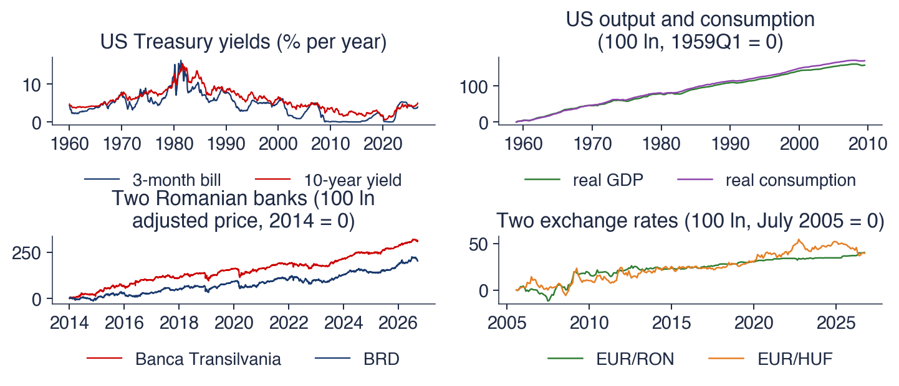

Academia de Studii Economice din București IDA Institute Digital Assets Blockchain Research Center AI4EFin Artificial Intelligence for Energy Finance Academia Română, Institutul de Prognoză Economică MSCA Digital Finance
Întrebarea capitolului pornește de la două prețuri care evoluează amîndouă ca niște mersuri aleatoare (random walks). Fiecare, luat separat, nu poate fi prognozat pe termen lung. Se poate totuși ca o combinație a lor, de exemplu diferența lor sau un raport, să fie stabilă în timp. Dacă se întîmplă acest lucru, seriile au un trend stochastic comun și un echilibru pe termen lung, iar o regresie în niveluri estimează o relație reală, nu una falsă.
Traseul are trei părți. Prima definește cointegrarea și o testează cu metoda Engle–Granger, cu valorile critice care i se potrivesc, apoi construiește modelul cu corecția erorii. A doua trece la sisteme: modelul VECM, teorema de reprezentare a lui Granger, testele Johansen, interpretarea coeficienților și prognoza. A treia aplică instrumentele: paritatea puterii de cumpărare, ratele dobînzii, trei monede central-europene și pairs trading la Bursa de Valori București. Capitolul se sprijină pe Capitolul 3, pentru rădăcinile unitare și regresia falsă, și pe Capitolul 6, pentru modelele VAR.
Pe scurt
Întrebarea: două prețuri evoluează amîndouă ca niște mersuri aleatoare; poate fi stabilă o combinație a lor și cum o modelăm?
dacă da, seriile au un trend stochastic comun și un echilibru pe termen lung: regresiile în niveluri au sens și nu sînt false
Traseul capitolului
ideea de cointegrare; metoda Engle–Granger în doi pași, cu valorile critice potrivite; modelele cu corecția erorii
modelul VECM și teorema de reprezentare a lui Granger; testele Johansen; estimarea și interpretarea lui \(\beta\) și \(\alpha\); prognoza
aplicații: paritatea puterii de cumpărare, ratele dobînzii, trei monede central-europene, pairs trading la Bursa de Valori București
Pornim de la Capitolul 3 (rădăcini unitare, regresia falsă) și de la Capitolul 6 (modele VAR)
Primele rezultate privesc conceptul și testarea lui pe o singură ecuație. Cititorul trebuie să poată defini cointegrarea și să o explice ca trend stochastic comun, să aplice testele Engle–Granger și Phillips–Ouliaris și să compare statisticile cu valorile critice ale testelor de cointegrare, nu cu cele Dickey–Fuller. Apoi trebuie să poată estima un model cu corecția erorii și să traducă viteza de ajustare într-un timp de înjumătățire.
Următoarele rezultate privesc sistemele: scrierea unui VAR ca VECM, enunțul teoremei de reprezentare a lui Granger și alegerea rangului de cointegrare cu testele Johansen, urmate de interpretarea vectorilor de cointegrare și a coeficienților de ajustare. Ultimele privesc utilizarea: cînd prognozează un VECM mai bine decît un VAR în diferențe și cum se evaluează o aplicație, de la condițiile de paritate la pairs trading, în afara eșantionului și după costuri.
Pe scurt
Definiți cointegrarea și explicați-o ca trend stochastic comun
Aplicați testele Engle–Granger și Phillips–Ouliaris și comparați statisticile cu valorile critice potrivite (nu cu cele Dickey–Fuller)
Estimați un model cu corecția erorii și interpretați viteza de ajustare și timpul de înjumătățire
Scrieți un VAR ca VECM, enunțați teorema de reprezentare a lui Granger și alegeți rangul de cointegrare cu testele Johansen
Interpretați vectorii de cointegrare și coeficienții de ajustare și decideți cînd un VECM prognozează mai bine decît un VAR în diferențe
Evaluați o aplicație (condiții de paritate, pairs trading) în afara eșantionului și după costuri
Manualul cursului este Huang și Petukhina (2022), al cărui capitol 9 tratează nestaționaritatea și cointegrarea. Teoria se găsește pe larg în Hamilton (1994), capitolele 19–20, și în Lütkepohl (2005), capitolele 6–8. Abordarea prin verosimilitate maximă, dezvoltată de Søren Johansen și Katarina Juselius, este expusă în Johansen (1995) și, cu accent pe aplicații, în Juselius (2006).
Lucrările de referință sînt Engle și Granger (1987), care a definit cointegrarea, Johansen (1988) și Johansen (1991), care au dat testele pentru sisteme, precum și prelegerea Nobel a lui Granger, Granger (2004). Calculele se fac în Python: coint, coint_johansen, VECM și VAR din statsmodels și phillips_ouliaris din arch. Quantlet-urile capitolului reproduc fiecare grafic și tabel, iar notebook-ul cursului rulează în Google Colab.
The relationship between co-integration and error correction models, first suggested in Granger (1981), is here extended and used to develop estimation procedures, tests, and empirical examples. If each element of a vector of time series x first achieves stationarity after differencing, but a linear combination a'x is already stationary, the time series x are said to be co-integrated with co-integrating vector a.
Capitolul 3 a arătat două lucruri care par să închidă discuția despre seriile cu trend stochastic. Multe serii economice și financiare sînt integrate de ordinul 1, \(I(1)\): devin staționare doar după o diferențiere. Iar regresia unei serii \(I(1)\) pe o altă serie \(I(1)\) fără legătură cu ea produce adesea un rezultat fals, cu statistici \(t\) mari și un \(R^2\) mare. Concluzia prudentă ar fi să lucrăm mereu în diferențe. Acest capitol arată de ce această concluzie este prea grăbită.
Există un caz important în care două sau mai multe serii \(I(1)\) sînt legate între ele pe termen lung: o anumită combinație liniară a lor este staționară. Seriile se pot îndepărta una de alta o vreme, dar distanța dintre ele revine mereu spre un nivel de echilibru. Acest caz se numește cointegrare (cointegration). Granger (1981) a formulat ideea, iar Engle și Granger (1987) au dat definiția, metoda de estimare în doi pași și legătura cu modelele cu corecția erorii. Diferențierea datelor ar șterge tocmai această informație despre termenul lung.
Capitolul construiește trei instrumente: testul Engle–Granger pe reziduuri, modelul cu corecția erorii pentru o ecuație și modelul vectorial cu corecția erorii (VECM), cu testele Johansen pentru numărul de relații de echilibru. Le aplică pe randamentele titlurilor de stat americane, pe consumul și venitul SUA, pe paritatea puterii de cumpărare pentru leu, pe ROBOR și Euribor, pe trei monede central-europene și pe o strategie de pairs trading la Bursa de Valori București. Rezultatele sînt mixte, iar a ști să citim un rezultat negativ este una dintre lecțiile capitolului.

Patru perechi de serii cu trend: randamentele titlurilor de stat americane la 3 luni și la 10 ani (lunar, din 1960), PIB-ul și consumul real al SUA (trimestrial, 1959–2009), prețurile ajustate ale acțiunilor Banca Transilvania și BRD (zilnic, din 2014) și cursurile EUR/RON și EUR/HUF (la sfîrșitul lunii, din iulie 2005).
Ce veți putea face
Definiți cointegrarea și explicați-o printr-un trend stochastic comun mai multor serii.
Testați cointegrarea cu testele Engle–Granger și Phillips–Ouliaris, folosind valorile critice potrivite.
Estimați un model cu corecția erorii și interpretați viteza de ajustare și timpul de înjumătățire.
Deduceți forma VECM a unui VAR și alegeți rangul de cointegrare cu testele Johansen.
Interpretați vectorii de cointegrare, coeficienții de ajustare și răspunsurile la impuls ale unui VECM.
Evaluați în afara eșantionului și după costuri prognozele unui VECM și o strategie de pairs trading.
Planul capitolului
Ideea de cointegrareRegresia falsă, femeia beată și cîinele ei, definiția și trendurile stochastice comune.
RezumatIdeile principale, formulele și întrebările de autoevaluare.
Ideea de cointegrare
Secțiunea pornește de la problema regresiei false și arată cazul în care o regresie între serii \(I(1)\) are sens. Intuiția vine dintr-o poveste cunoscută, cea a unei femei beate care își plimbă cîinele, verificată apoi prin simulare. Urmează definiția formală a cointegrării, reprezentarea ei prin trenduri stochastice comune, exemplele din teoria economică și primele teste pe patru perechi de serii reale.
Granger și Newbold (1974) au arătat, prin simulare, că regresia unui mers aleator pe un alt mers aleator, independent de primul, dă de cele mai multe ori o statistică \(t\) mare, un \(R^2\) mare și o statistică Durbin–Watson apropiată de 0. Rezultatul este o regresie falsă (spurious regression), discutată în Capitolul 3. Cauza este eroarea regresiei: oricare ar fi panta \(b\), combinația \(y_t - a - bx_t\) conține încă trendul stochastic al lui \(y_t\) și pe cel al lui \(x_t\), deci este ea însăși \(I(1)\). Nimic nu leagă cele două serii, iar testele obișnuite, care presupun erori staționare, nu mai sînt valide.
Excepția este cazul în care, pentru o anumită valoare a lui \(b\), combinația \(u_t = y_t - a - bx_t\) este staționară. Trendurile stochastice ale celor două serii se anulează atunci exact în această combinație, iar seriile se numesc cointegrate (Granger, 1981; Engle și Granger, 1987). Regresia în niveluri nu mai este falsă: ea estimează o relație reală pe termen lung. Cele două serii se pot îndepărta una de alta o perioadă, dar \(u_t\), fiind staționar, revine spre media lui și le aduce înapoi una spre cealaltă. În acest sens, \(u_t = 0\) descrie un echilibru.
Restul capitolului răspunde la trei întrebări legate de acest caz: cum îl recunoaștem în date, cum testăm formal dacă o combinație este staționară și cum construim un model care folosește informația din echilibru.
Pe scurt
Capitolul 3: regresia unei serii \(I(1)\) pe o altă serie \(I(1)\), fără legătură cu ea, dă un \(t\) mare, un \(R^2\) mare și o statistică Durbin–Watson apropiată de 0 Granger și Newbold (1974)
eroarea \(y_t - a - b x_t\) este ea însăși \(I(1)\) pentru orice \(b\): nimic nu leagă cele două serii
Excepția: pentru o anumită valoare a lui \(b\), combinația \(u_t = y_t - a - b x_t\) este staționară
Murray (1994) a dat o ilustrare devenită clasică. O femeie beată iese din local și rătăcește fără țintă: poziția ei \(x_t\) este un mers aleator, fiecare pas fiind imprevizibil. Cîinele ei rătăcește și el, deci poziția lui \(y_t\) este tot un mers aleator. Dacă cei doi ar fi trecători independenți, distanța dintre ei ar fi diferența a două mersuri aleatoare, adică tot un mers aleator, iar abaterea ei standard ar crește fără limită, proporțional cu \(\sqrt{t}\).
Femeia și cîinele nu sînt însă independenți. Cînd se îndepărtează, cîinele îi aude strigătul și aleargă înapoi, iar femeia aude cîinele și se întoarce spre el. Fiecare corectează o parte din distanță la fiecare pas: \(\Delta x_t = c\,(y_{t-1} - x_{t-1}) + u_t\) și \(\Delta y_t = d\,(x_{t-1} - y_{t-1}) + w_t\), unde \(c, d > 0\) sînt fracțiunile din distanță închise la fiecare pas, iar \(u_t\) și \(w_t\) sînt șocuri independente. Termenii cu \(c\) și \(d\) sînt termeni de corecție a erorii (error correction).
Rezultatul combină două proprietăți care par contradictorii. Fiecare traiectorie rămîne imprevizibilă, deoarece șocurile se acumulează, dar distanța \(y_t - x_t\) rămîne mărginită, deoarece este corectată la fiecare pas. Aceasta este, într-o singură imagine, ideea capitolului: cointegrarea și corecția erorii sînt două fețe ale aceluiași fenomen.
Murray (1994): o femeie beată iese din local și rătăcește: traiectoria ei \(x_t\) este un mers aleator
cîinele ei rătăcește și el: \(y_t\) este tot un mers aleator
distanța dintre doi trecători independenți crește fără limită, ca \(\sqrt{t}\)
Dar cîinele îi aude strigătul și aleargă înapoi; ea aude cîinele și se întoarce spre el
fiecare corectează o parte din distanță: \(\Delta x_t = c\,(y_{t-1} - x_{t-1}) + u_t\), \(\Delta y_t = d\,(x_{t-1} - y_{t-1}) + w_t\); \(c, d > 0\): fracțiunile din distanță închise la fiecare pas; \(u_t\), \(w_t\): șocuri independente
ambele traiectorii rămîn imprevizibile, dar distanța \(y_t - x_t\) rămîne mărginită: cointegrare cu corecția erorii
Întrebare pentru sală Setați c = d = 0: nici femeia, nici cîinele nu mai corectează distanța. Ce p-value dă ADF pentru distanța y − x?
Răspuns
0,261: rădăcina unitară nu se mai respinge. Fără corecție, y − x este diferența a două mersuri aleatoare independente, deci tot un mers aleator; abaterea standard a distanței crește de la 1,86 la 7,07. Cu c = 0,15 și d = 0,25, ρ = 0,6 și p < 0,001: corecția erorii, nu faptul că ambele serii pornesc din același loc, ține distanța mărginită.
Simularea aplică cele două ecuații pentru \(T = 400\) de pași, cu șocuri gaussiene și cu \(c = 0{,}15\) și \(d = 0{,}25\): la fiecare pas, femeia închide 15% din distanță, iar cîinele 25%. Pentru comparație, apare și un cîine fără stăpîn, \(z_t\), un mers aleator independent, cu aceeași varianță a șocurilor.
Panoul din stînga arată cele trei traiectorii. Femeia (\(x_t\)) și cîinele ei (\(y_t\)) rătăcesc împreună: drumul lor comun urcă și coboară fără vreo tendință previzibilă, dar cele două linii rămîn aproape suprapuse. Cîinele fără stăpîn pleacă în altă direcție și ajunge, după 400 de pași, la circa 50 de unități sub ceilalți doi. Panoul din dreapta arată distanțele: \(y_t - x_t\) oscilează strîns în jurul lui zero, în timp ce \(z_t - x_t\) derivă departe, pînă la circa \(-50\).
Pe scurt
\(T = 400\), șocuri gaussiene; \(c = 0{,}15\), \(d = 0{,}25\); un cîine fără stăpîn \(z_t\) este un mers aleator independent, cu aceeași varianță a șocurilor
Testele de rădăcină unitară confirmă ce arată graficul. Testul ADF (augmented Dickey–Fuller) aplicat traiectoriei femeii dă un p-value de 0,21, deci rădăcina unitară nu este respinsă, așa cum ne așteptăm de la un mers aleator. Distanța față de propriul cîine este însă un proces AR(1): scăzînd cele două ecuații, \(y_t - x_t = (1 - c - d)(y_{t-1} - x_{t-1}) + (w_t - u_t)\), cu coeficientul \(\rho = 1 - 0{,}15 - 0{,}25 = 0{,}6\). Testul ADF pe această distanță dă un p-value sub 0,001, iar abaterea ei standard este 1,9. Distanța față de cîinele fără stăpîn are un p-value ADF de 0,81 și o abatere standard de 14,1, adică se comportă ca un mers aleator.
Coeficientul \(\rho = 0{,}6\) arată și cît de repede se închide o distanță. După \(h\) pași fără șocuri noi rămîne o fracțiune \(0{,}6^h\) din ea, deci jumătate a dispărut după \(h = \ln 0{,}5/\ln 0{,}6 = 1{,}4\) pași. Această mărime este timpul de înjumătățire (half-life), care revine în secțiunea 3 pentru modelele estimate.
Consecința practică este importantă. Nici traiectoria femeii, nici cea a cîinelui nu pot fi prognozate pe termen lung, dar, știind unde este femeia, știm unde să căutăm cîinele. Cointegrarea nu face seriile previzibile; face previzibilă relația dintre ele.
Pe scurt
Fiecare traiectorie este \(I(1)\): ADF pe \(x_t\) dă p = 0,21
distanța \(y_t - x_t\) este un AR(1) cu \(\rho = 1 - c - d = 0{,}6\): ADF p \(<\) 0,001, abaterea standard 1,9
distanța față de cîinele fără stăpîn rătăcește: ADF p = 0,81, abaterea standard 14,1
Jumătate dintr-o distanță dispare în \(\ln 0{,}5/\ln 0{,}6 = 1{,}4\) pași: timpul de înjumătățire (secțiunea 3)
știind unde este femeia, știm unde să căutăm cîinele, deși niciuna dintre traiectorii nu poate fi prognozată
Definiția lui Engle și Granger (1987) se aplică unui vector de \(n\) serii, \(\mathbf y_t = (y_{1t}, \dots, y_{nt})^\top\). Componentele lui sînt cointegrate de ordinul (1,1), notat \(\mathbf y_t \sim CI(1,1)\), dacă sînt îndeplinite două condiții. Prima: fiecare componentă este \(I(1)\), adică devine staționară după o diferențiere, ca în Capitolul 3. A doua: există un vector \(\beta \neq 0\) pentru care combinația liniară \(\beta^\top\mathbf y_t\) este \(I(0)\), adică staționară. Primul 1 din notație spune ordinul de integrare al seriilor, al doilea cu cît scade acest ordin în combinație.
Vectorul \(\beta\) se numește vector de cointegrare (cointegrating vector), iar \(u_t = \beta^\top\mathbf y_t - \mu\), unde \(\mu\) este media combinației, se numește eroare de echilibru (equilibrium error). Vectorul nu este unic: dacă \(\beta^\top\mathbf y_t\) este staționar, atunci și \(2\beta^\top\mathbf y_t\) este. De aceea se normalizează un coeficient la 1; cu două variabile se scrie de obicei \(\beta = (1, -b)^\top\), ceea ce corespunde relației \(y_t = a + bx_t + u_t\).
Cu \(n\) variabile pot exista mai mulți vectori de cointegrare independenți liniar, dar cel mult \(n - 1\); numărul lor \(r\) se numește rang de cointegrare (cointegrating rank). Cointegrarea este o proprietate a nivelurilor: dacă diferențiem toate seriile înainte de modelare, combinația \(\beta^\top\mathbf y_t\) dispare din date și, odată cu ea, informația despre echilibru.
Pe scurt
DefinițieEngle și Granger (1987): componentele lui \(\mathbf y_t = (y_{1t}, \dots, y_{nt})^\top\) sînt cointegrate de ordinul (1,1), \(\mathbf y_t \sim CI(1,1)\), dacă
fiecare componentă este \(I(1)\) (Capitolul 3: staționară după o diferențiere) și
o anumită combinație liniară \(\beta^\top \mathbf y_t\), cu \(\beta \neq 0\), este \(I(0)\): staționară
\(\beta\) este vectorul de cointegrare; \(u_t = \beta^\top \mathbf y_t - \mu\) este eroarea de echilibru (\(\mu\): media ei; \(\top\): transpusa)
\(\beta\) este unic doar pînă la o constantă multiplicativă: și \(2\beta\) este bun; normalizăm un coeficient la 1, de exemplu \(\beta = (1, -b)^\top\)
cu \(n\) variabile pot exista cel mult \(r = n - 1\) vectori de cointegrare independenți; \(r\) este rangul de cointegrare
Cointegrarea este o proprietate a nivelurilor: diferențierea datelor distruge informația din \(\beta^\top \mathbf y_t\)
Un exemplu simplu arată mecanismul. Fie \(x_t = x_{t-1} + \varepsilon_t\) un mers aleator și \(y_t = bx_t + u_t\), cu \(u_t\) staționar. Ambele serii conțin același trend stochastic, suma șocurilor trecute \(\sum_{s \le t}\varepsilon_s\):\(x_t\) îl conține cu ponderea 1, \(y_t\) cu ponderea \(b\). Combinația \(y_t - bx_t = u_t\) îl elimină complet și rămîne staționară. Cointegrarea înseamnă deci că seriile sînt antrenate de trenduri comune, nu fiecare de trendul ei.
Stock și Watson (1988) au transformat această observație într-o reprezentare generală prin trenduri comune (common trends): \(n\) variabile cu \(r\) vectori de cointegrare sînt antrenate de \(n - r\) trenduri stochastice comune. Cele două extreme sînt instructive. Cu \(r = 0\) există \(n\) trenduri separate și nicio cointegrare. Cu \(r = n - 1\) există un singur trend, comun tuturor seriilor. Randamentele titlurilor de stat la 1, 5 și 10 ani, cu \(r = 2\), au un singur trend comun, nivelul general al ratelor dobînzii, după cum arată secțiunea 5.
Exemplul rezolvat folosește trei serii: \(x_t\) mers aleator, \(y_t = 2x_t + u_t\) și \(z_t = -x_t + v_t\), cu \(u_t\) și \(v_t\) staționare. Toate trei sînt antrenate de același trend, deci \(n = 3\),\(n - r = 1\) și \(r = 2\). În ordinea \((x_t, y_t, z_t)\), doi vectori de cointegrare sînt \(\beta_1 = (-2, 1, 0)^\top\), deoarece \(y_t - 2x_t = u_t\), și \(\beta_2 = (0, 1, 2)^\top\), deoarece \(y_t + 2z_t = 2x_t + u_t - 2x_t + 2v_t = u_t + 2v_t\). Orice combinație liniară a celor doi vectori este tot un vector de cointegrare; rangul spune cîte direcții independente există.
Pe scurt
Fie \(x_t = x_{t-1} + \varepsilon_t\) (un mers aleator) și \(y_t = b\,x_t + u_t\), cu \(u_t\) staționar
ambele serii conțin același trend stochastic \(\sum_{s \le t} \varepsilon_s\); \(y_t - b x_t = u_t\) îl elimină
Reprezentarea prin trenduri comuneStock și Watson (1988): \(n\) variabile cu \(r\) vectori de cointegrare sînt antrenate de \(n - r\) trenduri stochastice comune
\(r = 0\): \(n\) trenduri separate, fără cointegrare; \(r = n - 1\): un singur trend, comun tuturor
exemplu: trei randamente (la 1, 5 și 10 ani) cu \(r = 2\) au un singur trend comun, nivelul ratelor dobînzii (secțiunea 5)
Exemplu rezolvat: \(x_t\) mers aleator, \(y_t = 2x_t + u_t\), \(z_t = -x_t + v_t\) (\(u_t\), \(v_t\) staționare)
\(n = 3\), un singur trend comun, deci \(r = 2\): în ordinea \((x_t, y_t, z_t)\), de exemplu \(\beta_1 = (-2, 1, 0)^\top\) și \(\beta_2 = (0, 1, 2)^\top\) (deoarece \(y_t - 2x_t = u_t\) și \(y_t + 2z_t = u_t + 2v_t\))
Multe teorii economice afirmă că o anumită combinație de variabile nestaționare trebuie să fie stabilă. Paritatea puterii de cumpărare (purchasing power parity, PPP) scrie logaritmul cursului ca \(s_t = p_t - p_t^* + q_t\), unde \(s_t\) este logaritmul cursului (lei pentru un euro), \(p_t\) și \(p_t^*\) sînt logaritmii nivelurilor prețurilor în țară și în străinătate, iar \(q_t\) este cursul real. Teoria cere ca \(q_t\) să fie staționar, ceea ce înseamnă cointegrarea lui \(s_t\),\(p_t\) și \(p_t^*\);secțiunea 8 testează această cerință pentru leu.
Structura la termen a ratelor dobînzii oferă al doilea exemplu. Conform ipotezei așteptărilor (expectations hypothesis), un randament pe termen lung este media randamentelor pe termen scurt așteptate, plus o primă; atunci diferența (spread-ul) dintre randamentul pe termen lung și cel pe termen scurt este staționară (Campbell și Shiller, 1987). Al treilea exemplu sînt „marile rapoarte”: dacă consumul urmează venitul permanent, raportul dintre consum și venit, \(c_t - y_t\) în logaritmi, este stabil.
Ultimele exemple vin din piețele financiare. Arbitrajul menține mică diferența dintre prețul spot și prețul futures al aceluiași activ sau dintre un indice și un fond care îl replică. Acțiunile unor firme similare sînt expuse acelorași șocuri sectoriale și pot avea un trend comun; acesta este fundamentul strategiei pairs trading din secțiunea 9. În toate cazurile, teoria propune o relație, iar datele trebuie să o confirme.
Pe scurt
Paritatea puterii de cumpărare: \(s_t = p_t - p^*_t + q_t\), cu cursul real \(q_t\) staționar (secțiunea 8)
\(s_t\): logaritmul cursului (lei pentru un euro); \(p_t\), \(p^*_t\): logaritmii nivelurilor prețurilor în țară și în străinătate
Structura la termen a ratelor dobînzii: conform ipotezei așteptărilor, diferența (spread-ul) dintre un randament pe termen lung și unul pe termen scurt este staționară Campbell și Shiller (1987)
Consum și venit: „marele raport” \(c_t - y_t\) (în logaritmi) este stabil dacă consumul urmează venitul permanent
Prețul spot și prețul futures, un indice și un fond care îl replică: arbitrajul menține diferența mică
Acțiunile unor firme similare: aceleași șocuri sectoriale; baza pairs trading (secțiunea 9)
Întrebare pentru sală Setați a = 1 (c = −1). Care este al doilea vector de cointegrare?
Răspuns
β₂ = (0, 1, 1)ᵀ: yt + zt = ut + vt, fără trend. Vectorul depinde de coeficienți: în general β₂ = (0, 1, −a/c)ᵀ, deci (0, 1, 2)ᵀ pentru a = 2 și c = −1. Rangul rămîne 2, pentru că trei serii au tot un singur trend comun.
Întrebare pentru sală Eliminați primele 50% din fiecare eșantion. Mai respinge Engle–Granger „fără cointegrare” la 5% pentru consumul și PIB-ul SUA?
Răspuns
Nu: τ = −1,95, p = 0,553 pe ultimele 102 trimestre, față de τ = −3,54, p = 0,029 pe 203. Cu jumătate din date și abateri de durata unor ani, testul are puțină putere; p mare înseamnă că relația nu se separă de zgomot pe acest eșantion, nu că nu există. Pentru bănci testul rămîne sub 5% (p = 0,044).
Graficul arată patru perechi de serii folosite în tot capitolul. Primul panou conține randamentele titlurilor de stat americane la 3 luni și la 10 ani, în procente pe an, lunar din 1960, din baza de date FRED (Federal Reserve Economic Data). Al doilea conține PIB-ul și consumul real al SUA, trimestrial între 1959 și 2009, ca 100 × logaritmul natural, cu valoarea 0 în primul trimestru din 1959; pe această scară, o diferență de 1 unitate înseamnă aproximativ 1%.
Al treilea panou arată prețurile ajustate ale acțiunilor Banca Transilvania (TLV) și BRD din 2014, iar al patrulea cursurile de referință EUR/RON și EUR/HUF publicate de BNR, la sfîrșitul lunii, din iulie 2005, ambele ca 100 × logaritm, cu 0 la început. În fiecare panou, cele două serii par să evolueze împreună. Graficul singur nu poate spune însă dacă această impresie reflectă un trend comun sau doar două trenduri separate care au avut aceeași direcție în eșantion.
Pe scurt
Randamentele titlurilor de stat americane (FRED, lunar, din 1960); PIB-ul și consumul real al SUA (macrodata din statsmodels, 1959–2009)
Banca Transilvania și BRD (prețuri zilnice ajustate); EUR/RON și EUR/HUF (cursuri de referință BNR, la sfîrșitul lunii)
Fiecare dintre cele opt serii este \(I(1)\) după testele din Capitolul 3. Întrebarea este dacă cele două serii ale fiecărei perechi evoluează împreună pe termen lung, iar răspunsul îl dă testul Engle–Granger din secțiunea 2. Statistica lui, \(\tau\), se compară cu o valoare critică de 5% de circa \(-3{,}34\); o valoare mai negativă respinge ipoteza nulă a absenței cointegrării.
Pentru randamentul la 10 ani pe cel la 3 luni, \(\tau = -3{,}35\) cu p-value 0,048, un rezultat la limită. Pentru consum și venit, \(\tau = -3{,}54\) cu p-value 0,029, iar pentru cele două bănci \(\tau = -4{,}33\) cu p-value 0,002: acestea sînt cointegrate în eșantionul din 2014. Pentru EUR/RON și EUR/HUF, \(\tau = -2{,}47\) cu p-value 0,294: testul nu respinge ipoteza absenței cointegrării, deci datele nu oferă nicio dovadă a unui trend comun al celor două cursuri.
Ultima pereche este cea mai instructivă. Cele două cursuri au crescut cu valori apropiate din 2005, iar regresia în niveluri are \(R^2 = 0{,}79\). O direcție comună în eșantion nu este însă un trend stochastic comun: drumurile celor două serii s-au despărțit de mai multe ori, de exemplu după 2020, și nu există o forță care să le readucă împreună.
Pe scurt
Fiecare serie este \(I(1)\) (Capitolul 3); întrebarea este dacă cele două serii ale unei perechi evoluează împreună pe termen lung
testul Engle–Granger (secțiunea 2), valoarea critică de 5% circa \(-3{,}34\)
Randamentele: \(\tau = -3{,}35\), p = 0,048: la limită; consumul și venitul: \(\tau = -3{,}54\), p = 0,029
Cele două bănci: \(\tau = -4{,}33\), p = 0,002: cointegrate în acest eșantion
EUR/RON și EUR/HUF: \(\tau = -2{,}47\), p = 0,294: nicio dovadă de cointegrare
deși au crescut cu valori apropiate, iar \(R^2 = 0{,}79\) în niveluri: o direcție comună nu este un trend comun
Prima întrebare: două serii \(I(1)\) au în niveluri o corelație de 0,95; sînt ele cointegrate? Corelația nu răspunde la întrebare. Mersurile aleatoare fără nicio legătură între ele au adesea corelații mari în niveluri, acesta este chiar fenomenul regresiei false din Capitolul 3. Doar un test aplicat erorii de echilibru, adică întrebarea dacă o combinație a seriilor este staționară, poate decide.
A doua întrebare: două serii cointegrate au o corelație de 0,2 între variațiile lor zilnice; este o contradicție? Nu. Cointegrarea privește termenul lung: seriile nu se îndepărtează la nesfîrșit una de alta. Pe termen scurt, variațiile lor pot fi aproape necorelate, iar corecția distanței poate lucra încet, pe parcursul multor zile. Corelația variațiilor și cointegrarea nivelurilor sînt proprietăți diferite.
Pe scurt
Întrebare: două serii \(I(1)\) au în niveluri o corelație de 0,95. Sînt ele cointegrate?
Răspuns: nu putem spune: mersurile aleatoare fără legătură au adesea corelații mari (Capitolul 3); doar un test pe eroarea de echilibru decide
Întrebare: două serii cointegrate au o corelație de 0,2 între variațiile lor zilnice. Este o contradicție?
Răspuns: nu: cointegrarea privește termenul lung; pe termen scurt variațiile pot fi aproape necorelate
Seriile \(I(1)\) sînt cointegrate dacă o combinație liniară \(\beta^\top\mathbf y_t\) este staționară; combinația descrie un echilibru pe termen lung, iar abaterile de la el se corectează. O formulare echivalentă spune că seriile au trenduri stochastice comune: \(n\) variabile cu \(r\) vectori de cointegrare sînt antrenate de \(n - r\) trenduri. Teoria economică sugerează cointegrarea în multe locuri, de la condițiile de paritate la spread-uri și „marile rapoarte”, dar datele trebuie să o confirme printr-un test.
Pe scurt
Seriile \(I(1)\) sînt cointegrate dacă o combinație \(\beta^\top \mathbf y_t\) este staționară: un echilibru pe termen lung
Teoria sugerează cointegrarea (condiții de paritate, spread-uri, „marile rapoarte”), dar datele trebuie să o confirme
Sinteza secțiunii
Cointegrarea este excepția de la regula regresiei false: serii care, luate separat, sînt mersuri aleatoare imprevizibile pot fi legate printr-o combinație staționară. Simularea femeii beate și a cîinelui ei arată că o distanță corectată la fiecare pas rămîne mărginită, deși ambele traiectorii rătăcesc. Pe date reale, testul Engle–Granger găsește cointegrare pentru consum și venit și pentru două bănci românești, un rezultat la limită pentru două randamente americane și nicio dovadă pentru EUR/RON și EUR/HUF. Secțiunea următoare explică testul și valorile lui critice.
Metoda Engle–Granger în doi pași
Metoda lui Engle și Granger (1987) este cea mai simplă cale de a testa cointegrarea a două serii: o regresie în niveluri, urmată de un test de rădăcină unitară pe reziduuri. Simplitatea ascunde o capcană: valorile critice nu mai sînt cele Dickey–Fuller. Secțiunea explică de ce, le obține prin simulare, prezintă testul alternativ Phillips–Ouliaris, aplică ambele teste pe date reale și încheie cu limitele metodei.
Pasul 1 estimează relația pe termen lung prin metoda celor mai mici pătrate (ordinary least squares, OLS) în niveluri, \(y_t = a + bx_t + u_t\), și păstrează reziduurile \(\hat u_t = y_t - \hat a - \hat bx_t\). Dacă seriile sînt cointegrate, estimatorul \(\hat b\) are o proprietate neobișnuită: este superconsistent (super-consistent), adică eroarea lui scade ca \(1/T\), mai repede decît ritmul obișnuit \(1/\sqrt{T}\). Intuiția este că orice valoare greșită a lui \(b\) lasă un trend stochastic în reziduuri, iar varianța reziduurilor crește atunci odată cu eșantionul; OLS, care minimizează această varianță, găsește foarte repede valoarea corectă.
Pasul 2 aplică un test ADF, ca în Capitolul 3, reziduurilor din pasul 1, fără constantă, deoarece reziduurile OLS au deja media zero:
Aici \(\delta_j\) sînt coeficienții celor \(k\) laguri ale diferențelor, care preiau autocorelația lui \(\hat u_t\), iar \(e_t\) este zgomot alb (white noise). Ipoteza nulă \(\gamma = 0\) spune că reziduurile au o rădăcină unitară, deci nu există cointegrare; alternativa \(\gamma < 0\) spune că reziduurile revin spre zero. Statistica testului este \(\tau = \hat\gamma/\mathrm{SE}(\hat\gamma)\), unde SE este eroarea standard (standard error), iar ipoteza nulă se respinge cînd \(\tau\) este sub valoarea critică.
Testul are o condiție prealabilă: fiecare serie trebuie să fie \(I(1)\). O serie \(I(0)\) și una \(I(1)\) nu pot fi cointegrate, deoarece orice combinație cu coeficient nenul pe seria \(I(1)\) rămîne \(I(1)\). De aceea, fiecare analiză de cointegrare începe cu teste de rădăcină unitară pe fiecare serie.
Pe scurt
Pasul 1: estimăm relația pe termen lung prin OLS (ordinary least squares, metoda celor mai mici pătrate) în niveluri: \(y_t = a + b\,x_t + u_t\)
păstrăm reziduurile \(\hat u_t = y_t - \hat a - \hat b x_t\)
dacă seriile sînt cointegrate, \(\hat b\) este superconsistent: eroarea lui scade ca \(1/T\), mai repede decît de obicei (\(1/\sqrt{T}\))
Pasul 2: un test ADF (Capitolul 3) pe reziduuri, fără constantă: \(\Delta\hat u_t = \gamma\,\hat u_{t-1} + \sum_{j=1}^{k}\delta_j\Delta\hat u_{t-j} + e_t\)
\(H_0\): \(\gamma = 0\), reziduurile au o rădăcină unitară: fără cointegrare; \(H_1\): \(\gamma < 0\): cointegrare
\(\delta_j\): coeficienții celor \(k\) laguri ale diferențelor, care preiau autocorelația lui \(\hat u_t\); \(e_t\): zgomot alb
statistica \(\tau = \hat\gamma/\mathrm{SE}(\hat\gamma)\), SE: eroarea standard; respingem \(H_0\) cînd \(\tau\) este sub valoarea critică
Testare prealabilă: fiecare serie trebuie să fie \(I(1)\); o serie \(I(0)\) și una \(I(1)\) nu pot fi cointegrate
Motivul pentru care tabelul Dickey–Fuller este greșit aici
Reziduurile din pasul 1 nu sînt o serie observată, ci rezultatul unei optimizări. OLS alege \(\hat b\) astfel încît varianța reziduurilor să fie cît mai mică, adică astfel încît \(\hat u_t\) să arate cît mai „liniștit”. Chiar și atunci cînd seriile nu sînt cointegrate, \(\hat u_t\) pare deci mai staționar decît eroarea adevărată \(u_t\). În ipoteza nulă, statistica \(\tau\) este împinsă spre valori negative, iar distribuția ei este deplasată la stînga distribuției Dickey–Fuller.
Valorile critice corecte depind de numărul de variabile \(n\) din regresie și de termenii determiniști din pasul 1 (constantă sau constantă și trend). Engle și Granger (1987) le-au obținut prin simulare; MacKinnon (1994) și MacKinnon (2010) au dat apoi aproximări precise, pentru orice mărime a eșantionului, pe care le folosește funcția coint din statsmodels.
Există un caz în care tabelul Dickey–Fuller este cel corect: atunci cînd vectorul de cointegrare este cunoscut din teorie. Dacă teoria spune că spread-ul dintre două rate este staționar, adică \(\beta = (1, -1)^\top\), spread-ul se calculează direct, fără nicio estimare, iar testul ADF obișnuit, cu tabelul lui, se aplică acestei serii observate.
Pe scurt
OLS alege \(\hat b\) astfel încît varianța reziduurilor să fie cît mai mică
deci \(\hat u_t\) pare mai staționar decît adevăratul \(u_t\), chiar și atunci cînd nu există cointegrare
în ipoteza \(H_0\), statistica \(\tau\) este deplasată la stînga distribuției Dickey–Fuller
Valorile critice depind de numărul de variabile \(n\) și de termenii determiniști din pasul 1
Întrebare pentru sală Treceți la T = 50. Cît este valoarea critică de 5% pentru n = 2, cu constantă?
Răspuns
−3,46, față de −3,34 asimptotic și −3,37 la T = 200. La eșantioane mici distribuția statisticii este mai deplasată spre stînga, deci valorile critice sînt mai negative; tabelul Dickey–Fuller (−2,92 la T = 50) ar fi și mai departe de cea corectă.
Întrebare pentru sală Treceți la T = 50. Cu valoarea critică Dickey–Fuller de 5%, ce proporție din eșantioanele cu 2 variabile ar respinge o ipoteză nulă adevărată?
Răspuns
14,2%, aproape ca la T = 200 (14,5%), și 30,0% cu 3 variabile. Distorsiunea vine din faptul că OLS alege b̂ pentru a face reziduurile cît mai mici, nu din lungimea eșantionului; la T = 50 valoarea critică corectă pentru 2 variabile este −3,46 (cuantila simulată −3,41), față de −2,92 în tabelul Dickey–Fuller.
Simularea construiește distribuția statisticii \(\tau\) în ipoteza nulă. Se generează 10 000 de eșantioane de \(T = 200\) de observații, fiecare format din mersuri aleatoare gaussiene independente, deci fără cointegrare. Pentru fiecare eșantion se aplică pasul 1 cu constantă și pasul 2 fără laguri și se reține \(\tau\). Histogramele netezite ale celor 10 000 de valori dau distribuțiile din grafic.
Graficul arată patru curbe. Linia întreruptă este distribuția Normală standard, distribuția obișnuită a unei statistici \(t\). Curba albastră este distribuția Dickey–Fuller pentru o singură serie cu constantă, deja mult la stînga lui zero. Curbele roșie și verde sînt distribuțiile Engle–Granger pentru 2 și 3 variabile, deplasate și mai mult spre stînga. Liniile punctate verticale marchează cuantilele de 5% ale celor trei distribuții nestandard: cu cît sînt mai multe variabile, cu atît valoarea critică este mai negativă.
Pe scurt
10 000 de eșantioane de \(T = 200\) mersuri aleatoare gaussiene independente; pasul 1 cu constantă, pasul 2 fără laguri
Cuantilele de 5% din simulare sînt \(-2{,}86\) pentru o singură serie (cazul Dickey–Fuller), \(-3{,}33\) pentru 2 variabile și \(-3{,}75\) pentru 3 variabile. Valorile MacKinnon pentru \(T = 200\) sînt \(-2{,}88\),\(-3{,}37\) și \(-3{,}78\), deci simularea le reproduce pînă la eroarea de simulare.
Diferența dintre tabele are consecințe mari. Dacă am compara statistica reziduurilor cu valoarea Dickey–Fuller \(-2{,}88\), am respinge ipoteza nulă adevărată în 14,5% dintre eșantioanele cu 2 variabile și în 30,3% dintre cele cu 3 variabile, în loc de 5%. Cu alte cuvinte, am „găsi” cointegrare între mersuri aleatoare independente de trei pînă la șase ori mai des decît promite nivelul testului.
Motivul pentru care valorile critice cresc în valoare absolută odată cu numărul de variabile este cel din frame-ul anterior: fiecare variabilă în plus îi dă metodei OLS încă un coeficient cu care poate reduce varianța reziduurilor, deci reziduurile par și mai staționare.
Pe scurt
Cuantilele de 5%: \(-2{,}86\) (o serie, Dickey–Fuller), \(-3{,}33\) (2 variabile), \(-3{,}75\) (3 variabile)
valorile MacKinnon pentru \(T = 200\): \(-2{,}88\); \(-3{,}37\); \(-3{,}78\): simularea le reproduce
Folosind valoarea Dickey–Fuller \(-2{,}88\) pentru reziduuri, am respinge o ipoteză \(H_0\) adevărată în 14,5% din eșantioane cu 2 variabile și în 30,3% cu 3
în loc de 5%: am „găsi” cointegrare mult prea des
Mai multe variabile îi dau metodei OLS mai multă libertate de ajustare, de unde valori critice mai negative
Tabelul dă valorile critice asimptotice, pentru \(T \to \infty\), după MacKinnon (2010), la nivelurile de 1%, 5% și 10%, pentru 1–4 variabile și pentru două specificații ale pasului 1. Primul rînd, cu o singură variabilă, este testul Dickey–Fuller obișnuit și servește drept reper: valoarea de 5% cu constantă este \(-2{,}86\). Pentru 2 variabile ea devine \(-3{,}34\), pentru 3 variabile \(-3{,}74\), iar pentru 4 variabile \(-4{,}10\).
Rîndul se alege după numărul total de variabile din regresie, inclusiv \(y_t\); o regresie a lui \(y_t\) pe \(x_t\) folosește rîndul \(n = 2\). Pentru eșantioane finite, valorile critice sînt puțin mai negative decît cele asimptotice, de exemplu \(-3{,}37\) în loc de \(-3{,}34\) pentru 2 variabile și \(T = 200\); programele calculează valoarea potrivită pentru \(T\).
Coloanele din dreapta se folosesc atunci cînd pasul 1 include și un trend determinist. Această specificație este potrivită cînd seriile au derive (creșteri medii) pe care relația de cointegrare nu le anulează; valorile critice sînt atunci și mai negative, de exemplu \(-3{,}78\) la 5% pentru 2 variabile.
Pe scurt
Variabile \(n\)
constantă
constantă și trend
1%
5%
10%
1%
5%
10%
1 (Dickey–Fuller)
\(-3{,}43\)
\(-2{,}86\)
\(-2{,}57\)
\(-3{,}96\)
\(-3{,}41\)
\(-3{,}13\)
2
\(-3{,}90\)
\(-3{,}34\)
\(-3{,}04\)
\(-4{,}33\)
\(-3{,}78\)
\(-3{,}50\)
3
\(-4{,}29\)
\(-3{,}74\)
\(-3{,}45\)
\(-4{,}66\)
\(-4{,}12\)
\(-3{,}84\)
4
\(-4{,}64\)
\(-4{,}10\)
\(-3{,}81\)
\(-4{,}97\)
\(-4{,}43\)
\(-4{,}15\)
Valori asimptotice (\(T \to \infty\)) din MacKinnon (2010); pentru \(T\) finit, valorile sînt puțin mai negative
Citiți rîndul cu numărul total de variabile din regresie, inclusiv \(y_t\)
Constantă și trend în pasul 1: cînd seriile au derive pe care relația nu le anulează
Phillips și Ouliaris (1990) au propus un test cu același pas 1 și aceeași ipoteză nulă, absența cointegrării. Diferența este în pasul 2: regresia Dickey–Fuller pe reziduuri se estimează fără laguri ale diferențelor, iar autocorelația reziduurilor este tratată printr-o corecție a statisticii \(t\) cu varianța pe termen lung (long-run variance) a reziduurilor, ca în testul Phillips–Perron din Capitolul 3. Testul are două versiuni: \(Z_t\), raportul \(t\) corectat, și \(Z_\alpha\), statistica \(T\hat\gamma\) corectată. Valorile critice asimptotice ale lui \(Z_t\) sînt aceleași ca la testul Engle–Granger.
Folosirea ambelor teste are un motiv practic. Testul Engle–Granger depinde de numărul de laguri \(k\), ales de obicei după criteriul informațional Akaike (AIC), iar testul Phillips–Ouliaris depinde de lățimea de bandă (bandwidth) folosită pentru varianța pe termen lung. Cele două alegeri tratează aceeași autocorelație pe căi diferite. Cînd testele concordă, verdictul este robust; cînd nu concordă, trebuie examinate graficul reziduurilor și eșantionul.
În Python, testul Engle–Granger este coint(y, x) din statsmodels, iar testul Phillips–Ouliaris este phillips_ouliaris(y, x, test_type="Zt") din arch.
pasul 2: o regresie Dickey–Fuller fără laguri ale diferențelor; statistica \(t\) este corectată cu varianța pe termen lung a reziduurilor (ca în testul Phillips–Perron din Capitolul 3)
două versiuni: \(Z_t\) (raportul \(t\) corectat) și \(Z_\alpha\) (\(T\hat\gamma\) corectat); valorile critice ale lui \(Z_t\) sînt cele Engle–Granger
Motivul folosirii a două teste
Engle–Granger depinde de numărul de laguri \(k\) ales după AIC; Phillips–Ouliaris depinde de lățimea de bandă a varianței pe termen lung
cînd concordă, verdictul este robust; cînd nu concordă, examinăm graficul reziduurilor și eșantionul
În Python: coint(y, x) din statsmodels; phillips_ouliaris(y, x, test_type="Zt") din arch
Datele sînt consumul real și PIB-ul real al SUA, trimestrial, din primul trimestru al anului 1959 pînă în al treilea trimestru al anului 2009, adică 203 trimestre. Ambele sînt transformate în \(c_t\) și \(y_t\), 100 × logaritmul natural, astfel încît o unitate înseamnă aproximativ 1%. Testarea prealabilă cu ADF cu trend dă p-values de 0,31 pentru \(c_t\) și 0,39 pentru \(y_t\), deci ambele serii sînt tratate ca \(I(1)\).
Pasul 1 dă \(\hat c_t = -107{,}6 + 1{,}075\,y_t\), cu \(R^2 = 0{,}9992\) și statistica Durbin–Watson (DW) a reziduurilor 0,24. Statistica DW este aproximativ 2 cînd reziduurile nu sînt autocorelate și se apropie de 0 cînd sînt foarte persistente. Panta apropiată de 1 sugerează o pondere stabilă a consumului în venit. Nici \(R^2\) aproape de 1, nici DW mic nu dovedesc însă nimic: aceeași combinație apare și într-o regresie falsă.
Pasul 2 dă \(\tau = -3{,}54\), cu 0 laguri alese după AIC. Valoarea critică de 5% pentru \(n = 2\) și \(T = 203\) este \(-3{,}37\). Deoarece \(-3{,}54 < -3{,}37\), ipoteza „fără cointegrare” este respinsă la 5%, cu p-value 0,029; testul Phillips–Ouliaris dă \(Z_t = -3{,}52\), cu p-value 0,031. Comparația cu valoarea Dickey–Fuller, \(-2{,}88\), ar fi dus aici la aceeași decizie, dar dintr-un motiv greșit: cu o statistică între \(-3{,}37\) și \(-2{,}88\), ar fi dus la o concluzie greșită.
Pe scurt
Datele: \(c_t\), \(y_t\) = 100 \(\times\) logaritmul consumului real și al PIB-ului real, trimestrial, T1 1959–T3 2009 (203 trimestre)
testare prealabilă: ADF cu trend, p = 0,31 pentru \(c_t\) și 0,39 pentru \(y_t\): ambele \(I(1)\)
Întrebare pentru sală Terminați eșantionul în 1985. Se respinge „fără cointegrare” la 5%?
Răspuns
Nu: τ = −3,00 față de valoarea critică Engle–Granger −3,39 (p = 0,111), pe 108 trimestre. Cu valoarea Dickey–Fuller (−2,89) s-ar respinge, greșit. R² rămîne peste 0,99 și panta 1,072, dar nici R² mare, nici o pantă apropiată de 1 nu dovedesc cointegrarea.
Exemplu rezolvat
\[\Delta\hat u_t=\gamma\,\hat u_{t-1}+\textstyle\sum_{j=1}^{k}\delta_j\Delta\hat u_{t-j}+e_t,\qquad \tau=\dfrac{\hat\gamma}{\mathrm{SE}(\hat\gamma)}\ \text{față de valoarea critică Engle–Granger}\]
Întrebare pentru sală Eliminați primele 30% din fiecare eșantion. Mai lipsește dovada de cointegrare pentru TLV pe BRD din 2010?
Răspuns
Nu: τ = −3,98, p = 0,008 (Phillips–Ouliaris p = 0,001), față de p = 0,622 pe tot eșantionul din 2010. Fără anii 2010–2014 relația dintre cele două bănci apare; aceeași pereche dă verdicte opuse după data de început, de aceea alegerea eșantionului după ce ați văzut datele este data snooping.
Întrebare pentru sală Eliminați primele 50% din fiecare eșantion. Scade autocorelația de ordinul 8 a reziduurilor consumului?
Răspuns
Nu: crește de la 0,31 la 0,46, iar pentru randamente ρ̂(12) crește de la 0,58 la 0,62. În a doua jumătate a eșantioanelor abaterile de la relația pe termen lung durează mai mult; persistența reziduurilor depinde de perioada aleasă, de aceea decizia o dă testul, nu forma ACF.
Graficul arată reziduurile \(\hat u_t\) din pasul 1 pentru două regresii: consumul pe venit (stînga, trimestrial) și randamentul la 10 ani pe cel la 3 luni (centru, lunar). Ambele oscilează în jurul lui zero, dar în valuri lungi: reziduurile consumului rămîn sub zero în cea mai mare parte a anilor 1960 și peste zero după 2000, iar cele ale randamentelor au cicluri de cîțiva ani, cu cele mai mari abateri în jurul anului 1980.
Panoul din dreapta compară funcțiile de autocorelație de selecție (sample autocorrelation function, ACF) ale celor două serii de reziduuri cu ACF a unui mers aleator simulat (linia întreruptă). ACF a reziduurilor consumului scade repede și trece sub zero după circa 14 laguri. ACF a reziduurilor randamentelor scade mult mai încet. ACF a mersului aleator rămîne aproape de 1 și coboară doar pînă la circa 0,7 după 24 de laguri.
Pe scurt
Stînga și centru: \(\hat u_t\) pentru consumul pe venit și pentru randamentul la 10 ani pe cel la 3 luni; dreapta: ACF de selecție a lor și a unui mers aleator simulat
Pentru consum, autocorelația reziduurilor este 0,86 la lagul 1, dar doar 0,31 la lagul 8. Abaterile de la echilibru, de ordinul a 1–3%, sînt persistente de la un trimestru la altul, dar se reduc mult în aproximativ doi ani. Pentru randamente, autocorelația este 0,97 la lagul 1 și încă 0,58 la lagul 12: abaterile durează ani de zile, iar testul este la limită (\(\tau = -3{,}35\), p-value 0,048).
Persistența ridicată este situația obișnuită pentru erorile de echilibru, nu o excepție. Un proces AR(1) cu \(\rho\) apropiat de 1 este greu de deosebit de un mers aleator într-un eșantion finit; puterea testelor de rădăcină unitară împotriva unor astfel de alternative este mică, ca în Capitolul 3. De aceea, un rezultat la limită pentru serii foarte persistente trebuie citit cu prudență în ambele direcții.
Comparația cu mersul aleator arată și limita inspecției vizuale. ACF a unui mers aleator descrește mult mai lent decît cea a reziduurilor, dar diferența dintre o descreștere lentă și una foarte lentă nu se poate tranșa din ochi. Testul transformă această diferență într-o decizie cu un nivel de semnificație cunoscut.
Pe scurt
Consumul: \(\hat\rho(1) = 0{,}86\), dar \(\hat\rho(8) = 0{,}31\): abateri de 1–3% care se reduc mult în aproximativ doi ani
Randamentele: \(\hat\rho(1) = 0{,}97\), \(\hat\rho(12) = 0{,}58\): abateri foarte persistente; un test la limită (\(\tau = -3{,}35\), p = 0,048)
persistența ridicată este situația obișnuită: puterea testului împotriva unui \(\rho\) apropiat de 1 este mică (Capitolul 3)
Un mers aleator descrește mult mai lent: ACF singură nu poate tranșa întrebarea; testul poate
Tabelul aplică ambele teste pe șapte regresii. Pentru fiecare, coloanele dau frecvența datelor, numărul de observații \(T\), panta estimată \(\hat b\), statistica Engle–Granger \(\tau\) cu numărul de laguri \(k\) ales după AIC, p-value-ul ei, statistica Phillips–Ouliaris \(Z_t\) și p-value-ul ei. P-values-urile provin din aproximările lui MacKinnon (2010) pentru 2 variabile.
Primele rînduri reiau exemplele deja discutate: consumul pe venit în SUA (\(\tau = -3{,}54\), p-value 0,029) și randamentul la 10 ani pe cel la 3 luni (\(\tau = -3{,}35\) cu 20 de laguri, p-value 0,048, iar \(Z_t = -4{,}04\), p-value 0,006). Urmează perechea de bănci în trei variante: TLV pe BRD din 2014 (p-value 0,002), regresia inversă BRD pe TLV din 2014 (p-value 0,004) și TLV pe BRD din 2010 (p-value 0,622). Cursurile EUR/RON și EUR/HUF au p-value 0,294.
Ultimul rînd folosește consumul gospodăriilor și PIB-ul României, din Eurostat, în volume înlănțuite, ajustate sezonier, trimestrial din 1995, 126 de observații. Panta este 1,46, iar cele două teste dau verdicte opuse: p-value 0,363 pentru Engle–Granger, cu 8 laguri, și sub 0,001 pentru Phillips–Ouliaris.
Pe scurt
Regresia
Frecv.
\(T\)
\(\hat b\)
\(\tau\) (k)
p
\(Z_t\)
p
SUA: consumul pe venit
trimestrial
203
1,07
\(-3{,}54\) (0)
0,029
\(-3{,}52\)
0,031
SUA: 10 ani pe 3 luni
lunar
801
0,86
\(-3{,}35\) (20)
0,048
\(-4{,}04\)
0,006
TLV pe BRD (din 2014)
zilnic
3 176
1,36
\(-4{,}33\) (3)
0,002
\(-4{,}14\)
0,005
BRD pe TLV (din 2014)
zilnic
3 176
0,71
\(-4{,}16\) (3)
0,004
\(-4{,}02\)
0,007
TLV pe BRD (din 2010)
zilnic
4 187
1,68
\(-1{,}82\) (3)
0,622
\(-1{,}83\)
0,619
EUR/RON pe EUR/HUF
lunar
255
0,71
\(-2{,}47\) (0)
0,294
\(-2{,}43\)
0,309
România: consumul pe PIB
trimestrial
126
1,46
\(-2{,}32\) (8)
0,363
\(-6{,}80\)
\(<\) 0,001
\(\tau\): statistica Engle–Granger (\(k\) laguri după AIC); p-value-uri din MacKinnon (2010) pentru 2 variabile; \(Z_t\): Phillips–Ouliaris
Băncile: prețuri ajustate din data/market; România: consumul gospodăriilor și PIB-ul, Eurostat, volume înlănțuite, ajustate sezonier, din 1995
Prima lecție privește normalizarea. Regresia lui TLV pe BRD dă \(\tau = -4{,}33\), iar regresia lui BRD pe TLV dă \(\tau = -4{,}16\); pantele, 1,36 și 0,71, nu sînt exact inverse una alteia, deoarece \(1/1{,}36 = 0{,}74\). OLS minimizează erorile pe direcția variabilei din stînga, deci rezultatul depinde de alegerea ei. Aici verdictul este același în ambele direcții, dar nu este garantat să fie mereu așa.
A doua lecție privește eșantionul. Din 2010, aceleași bănci au p-value 0,622, iar testul nu detectează cointegrare; din 2014, p-value-ul este 0,002. A alege data de început după ce am examinat datele și am văzut care dă rezultatul dorit este o formă de data snooping, adică de căutare în date pînă la găsirea unui rezultat; p-value-ul obținut astfel nu mai are semnificația nominală.
A treia lecție privește dezacordul testelor. Pentru România, Engle–Granger cu 8 laguri nu respinge absența cointegrării, în timp ce Phillips–Ouliaris o respinge la orice nivel uzual. Panta 1,46 este departe de 1: ponderea consumului în PIB a crescut puternic în perioada analizată, iar o astfel de relație poate fi greu de distins de o relație instabilă. Seminarul 7 (B2) discută acest caz.
Pe scurt
Normalizarea: TLV pe BRD și BRD pe TLV dau valori \(\tau\) diferite (\(-4{,}33\) și \(-4{,}16\)) și pante care nu sînt exact inverse una alteia
Engle–Granger depinde de variabila aleasă în stînga; aici verdictul este același
Eșantionul: din 2010 testul nu găsește cointegrare pentru aceleași bănci (p = 0,622); din 2014 o găsește (p = 0,002)
alegerea datei de început după examinarea datelor este o formă de data snooping (căutare în date pînă la găsirea unui rezultat)
Cele două teste nu concordă pentru România: Engle–Granger p = 0,363 cu 8 laguri, Phillips–Ouliaris p \(<\) 0,001
panta 1,46 este departe de 1: ponderea consumului a crescut puternic; Seminarul 7 (B2) discută acest caz
Metoda are patru limite. Prima: poate găsi cel mult un vector de cointegrare. Cu două variabile nu este o problemă, dar cu \(n \ge 3\) variabile pot exista mai mulți vectori, iar o singură regresie estimează doar o combinație a lor (secțiunile 4–5). A doua: rezultatele depind de variabila pusă în stînga, după cum a arătat perechea de bănci.
A treia limită privește inferența asupra lui \(\hat b\). Estimatorul este superconsistent, dar are o deplasare (bias) în eșantioane mici, iar statisticile \(t\) raportate de OLS în pasul 1 nu sînt valide, deoarece erorile sînt autocorelate și corelate cu variațiile lui \(x_t\). Un remediu este OLS dinamic (dynamic OLS, DOLS) al lui Stock și Watson (1993), care adaugă în regresie valori viitoare (leads) și laguri ale lui \(\Delta x_t\) și dă erori standard valide.
A patra limită vine din structura în doi pași: erorile de estimare din pasul 1 se transmit în pasul 2, iar puterea testului este mică atunci cînd ajustarea spre echilibru este lentă. Metoda Johansen din secțiunea 5 evită aceste probleme estimînd totul deodată, prin verosimilitate maximă, într-un sistem.
Pe scurt
Cel mult un vector de cointegrare: cu \(n \ge 3\) variabile pot exista mai mulți (secțiunile 4–5)
Normalizarea: rezultatele depind de variabila pusă în stînga
Inferența asupra lui \(\hat b\): superconsistent, dar deplasat în eșantioane mici, iar statisticile \(t\) din OLS nu sînt valide
remediu: OLS dinamic (DOLS) Stock și Watson (1993), cu valori viitoare (leads) și laguri ale lui \(\Delta x_t\), dă erori standard valide
Erori în doi pași: greșelile din pasul 1 se transmit în pasul 2; puterea este mică împotriva unei ajustări lente
metoda Johansen (secțiunea 5) estimează totul deodată, prin verosimilitate maximă
Întrebarea lucrării era cum se modelează serii \(I(1)\) legate pe termen lung fără a cădea în capcana regresiei false și fără a elimina, prin diferențiere, informația despre termenul lung. Engle și Granger (1987), scrisă la Universitatea California din San Diego, a devenit una dintre cele mai citate lucrări din econometrie.
Contribuția are trei părți. Prima este definiția cointegrării și teorema de reprezentare din secțiunea 4, care arată că seriile cointegrate au întotdeauna o reprezentare cu corecția erorii și reciproc. A doua este estimatorul în doi pași și testele pe reziduuri, cu valori critice obținute prin simulare, adică metoda acestei secțiuni. A treia sînt aplicațiile pe serii din SUA: consumul și venitul, prețurile și salariile, ratele dobînzii pe termen scurt și pe termen lung.
Robert Engle a primit în 2003, împreună cu Clive Granger, Premiul Nobel pentru economie; partea lui Engle a fost pentru modelele ARCH din Capitolul 5, iar a lui Granger pentru cointegrare.
Metoda are doi pași: OLS în niveluri, cu un estimator \(\hat b\) superconsistent, și un test ADF pe reziduuri (7.1), cu ipoteza nulă a absenței cointegrării. Valorile critice sînt cele Engle–Granger, calculate de MacKinnon, mai negative decît cele Dickey–Fuller și dependente de numărul de variabile. Un verdict se verifică cu testul Phillips–Ouliaris, cu normalizarea inversă și pe un alt eșantion.
Pe scurt
Pasul 1: OLS în niveluri (\(\hat b\) superconsistent); pasul 2: ADF pe reziduuri, \(H_0\): fără cointegrare
Valorile critice Engle–Granger (MacKinnon), mai negative decît cele Dickey–Fuller și dependente de \(n\)
Verificăm cu Phillips–Ouliaris, cu normalizarea inversă și cu un alt eșantion
Sinteza secțiunii
Testul Engle–Granger este simplu, dar cere tabelul potrivit: deoarece OLS face reziduurile să pară staționare, valorile critice Dickey–Fuller ar găsi cointegrare între serii independente de trei pînă la șase ori mai des decît promit. Pe datele reale, consumul și venitul SUA și perechea TLV–BRD din 2014 sînt cointegrate după ambele teste; aceeași pereche din 2010, cursurile EUR/RON și EUR/HUF și, după Engle–Granger, consumul și PIB-ul României nu dau dovezi de cointegrare. Dependența de normalizare, de eșantion și de alegerea lagurilor sînt limitele care motivează metodele pentru sisteme.
Modele cu corecția erorii
Dacă două serii sînt cointegrate, eroarea de echilibru de ieri conține informație despre variațiile de azi. Modelul cu corecția erorii (error correction model, ECM) pune această informație într-o regresie în diferențe. Secțiunea definește modelul, traduce coeficientul de ajustare într-un timp de înjumătățire, estimează modele ECM pentru consumul SUA și pentru randamentul la 10 ani și prezintă funcția de consum DHSY, prima aplicație celebră a acestei forme.
Fie \(u_{t-1} = y_{t-1} - a - bx_{t-1}\) eroarea de echilibru din perioada anterioară. Modelul cu corecția erorii explică variația lui \(y_t\) prin variațiile curente și trecute ale variabilelor și prin această eroare:
Aici \(c\) este termenul liber, \(\phi_j\) și \(\delta_j\) sînt coeficienții pe termen scurt ai lagurilor diferențelor, iar \(\varepsilon_t\) este zgomot alb. Dacă seriile sînt cointegrate, toți termenii ecuației sînt staționari: diferențele, deoarece seriile sînt \(I(1)\), și \(u_{t-1}\), prin definiția cointegrării. De aceea OLS și testele \(t\) obișnuite sînt valide, iar în locul lui \(u_{t-1}\) se poate folosi \(\hat u_{t-1}\) din pasul 1 al metodei Engle–Granger, datorită superconsistenței lui \(\hat b\).
Coeficienții au interpretări distincte. Panta \(b\) din relația de echilibru este efectul pe termen lung (long-run effect) al lui \(x\) asupra lui \(y\);\(\delta_0\) este efectul pe termen scurt (short-run effect), în aceeași perioadă. Coeficientul \(\gamma\) este viteza de ajustare (speed of adjustment). Dacă \(y_{t-1}\) a fost peste echilibru, \(u_{t-1} > 0\), iar \(\gamma < 0\), atunci \(\gamma u_{t-1}\) este negativ și \(y_t\) tinde să scadă: o fracțiune \(|\gamma|\) din distanță se închide în fiecare perioadă. Corecția erorii cere \(-2 < \gamma < 0\); pentru \(\gamma\) între \(-1\) și 0, ajustarea este monotonă.
Pe scurt
Cu \(u_{t-1} = y_{t-1} - a - b x_{t-1}\) (eroarea de echilibru din perioada anterioară), modelul cu corecția erorii (ECM) este
\(c\): termenul liber; \(\phi_j\), \(\delta_j\): coeficienții pe termen scurt ai lagurilor diferențelor; \(\varepsilon_t\): zgomot alb
Interpretare: dacă \(y_{t-1}\) a fost peste echilibru (\(u_{t-1} > 0\)) și \(\gamma < 0\), atunci \(y_t\) tinde să scadă: o fracțiune \(|\gamma|\) din distanță se închide în fiecare perioadă
Viteza \(\gamma\) este greu de citit direct; un timp este mai ușor de comunicat. Într-un sistem cu două variabile în care doar \(y\) se ajustează, fără șocuri noi, eroarea de echilibru evoluează după \(u_t = (1 + \gamma)\,u_{t-1}\), deci după \(h\) perioade rămîne \(u_h = (1 + \gamma)^h u_0\). Timpul de înjumătățire este numărul de perioade după care a dispărut jumătate dintr-o abatere:
Exemplul rezolvat folosește \(\gamma = -0{,}2\):\(h_{1/2} = \ln 0{,}5/\ln 0{,}8 = 3{,}1\) perioade. Pe date lunare, jumătate dintr-o abatere dispare în circa trei luni; pe date trimestriale, în circa trei trimestre, adică în nouă luni. Aceeași valoare a lui \(\gamma\) înseamnă deci viteze reale foarte diferite.
De aceea, timpii de înjumătățire se compară doar în aceeași unitate de timp. Un \(\gamma\) estimat pe date lunare și unul estimat pe date trimestriale nu sînt comparabile direct; trebuie mai întîi transformați în timpi de înjumătățire și exprimați în aceeași unitate.
Pe scurt
Fără șocuri noi, eroarea de echilibru evoluează după \(u_t = (1 + \gamma)\,u_{t-1}\), deci \(u_h = (1 + \gamma)^h u_0\)
(într-un sistem cu două variabile în care se ajustează doar \(y\))
Timpul de înjumătățire: numărul de perioade după care a dispărut jumătate dintr-o abatere
Întrebare pentru sală Setați γ = −0,5. Cît este timpul de înjumătățire?
Răspuns
O perioadă: ln 0,5/ln 0,5 = 1. Jumătate din abatere dispare la fiecare pas, deci după o perioadă rămîne exact jumătate. Regula 1/|γ| = 2 ar presupune o ajustare liniară, nu geometrică.
Întrebare pentru sală Setați abaterea ût−1 = −2 (consumul sub echilibru), cu venitul +1%. Cît devine creșterea prognozată a consumului?
Răspuns
1,05%: 0,418 + 0,537 × 1 + (−0,047) × (−2) = 0,418 + 0,537 + 0,095. Cînd consumul este sub echilibru, termenul de corecție îl împinge în sus, cu aceeași mărime cu care îl frîna în exemplul din curs (0,86%).
Întrebare pentru sală Setați α₂ = −0,1 (cu α₁ = −0,1). Mai revine decalajul y₁ − y₂ la zero?
Răspuns
Nu: 1 + βᵀα = 1 + α₁ − α₂ = 1 − 0,1 + 0,1 = 1, deci zt = zt−1 + u₁t − u₂t este un mers aleator. Ambele variabile scad cînd y₁ > y₂, cu aceeași viteză, deci decalajul nu se închide: contează βᵀα, nu semnul fiecărui α.
Întrebare pentru sală Terminați eșantioanele în 1990. Cît devine timpul de înjumătățire al ECM-ului pentru consum?
Răspuns
27 de trimestre: γ̂ = −0,025, cu t = −0,66, față de 14,3 trimestre și t = −1,75 pînă în 2009. Pe 1959–1990 termenul de corecție nu se separă de zgomot, iar un γ̂ mic în modul dă un timp de înjumătățire lung și imprecis. Pentru randamentul la 10 ani, pînă în 1990: γ̂ = −0,048 (t = −4,58), 13,9 luni.
Panoul din stînga arată funcția \((1 + \gamma)^h\), fracțiunea dintr-o abatere unitară rămasă după \(h\) perioade, pentru trei viteze. Cu \(\gamma = -0{,}05\), curba coboară încet, iar jumătatea abaterii dispare după 13,5 perioade. Cu \(\gamma = -0{,}2\), după 3,1 perioade. Cu \(\gamma = -0{,}5\), după o singură perioadă. Linia orizontală punctată marchează nivelul 0,5; punctul în care fiecare curbă o traversează este timpul de înjumătățire.
Panoul din dreapta arată aceeași descreștere pentru cele două modele ECM estimate în frame-ul următor: consumul din SUA, în trimestre, cu \(\hat\gamma = -0{,}047\), și randamentul la 10 ani, în luni, cu \(\hat\gamma = -0{,}033\). Pe axa orizontală, aceleași numere înseamnă trimestre pentru prima curbă și luni pentru a doua; cele două curbe arată asemănător, dar descriu viteze reale diferite.
Pe scurt
Stînga: \((1 + \gamma)^h\) pentru trei viteze; dreapta: descreșterea implicată de modelele ECM estimate pentru consumul din SUA (trimestre) și pentru randamentul la 10 ani (luni)
Pentru consumul din SUA, viteza de ajustare estimată este \(\hat\gamma = -0{,}047\), cu statistica \(t = -1{,}75\), ceea ce dă un timp de înjumătățire de 14,3 trimestre, adică peste trei ani și jumătate. Efectul pe termen scurt al venitului este \(\hat\delta_0 = 0{,}54\): aproximativ jumătate dintr-o creștere a venitului ajunge în consum în același trimestru. Restul vine lent, prin corecția erorii, iar termenul de ajustare este doar marginal semnificativ, la nivelul de 10%.
Pentru randamentul la 10 ani, regresat pe cel la 3 luni, \(\hat\gamma = -0{,}033\), cu \(t = -4{,}94\), iar timpul de înjumătățire este 20,8 luni; efectul pe termen scurt este \(\hat\delta_0 = 0{,}38\). Și rata la 3 luni reacționează la aceeași eroare de echilibru, cu \(\hat\gamma = 0{,}024\) și \(t = 2{,}08\). Semnul opus are sens: cînd randamentul la 10 ani este prea mare față de cel la 3 luni, primul scade, iar al doilea crește, deci ambele rate se apropie una de cealaltă.
Ultima observație arată limita unui ECM cu o singură ecuație. Dacă ambele variabile se ajustează, ecuația pentru \(\Delta y_t\) descrie doar o parte a corecției, iar cealaltă parte rămîne în afara modelului. Modelul care descrie ajustarea tuturor variabilelor deodată este VECM, din secțiunea 4.
Pe scurt
Consumul: \(\hat\gamma = -0{,}047\) (\(t = -1{,}75\)), timp de înjumătățire 14,3 trimestre; \(\hat\delta_0 = 0{,}54\)
jumătate dintr-o creștere a venitului ajunge în consum în același trimestru; restul vine lent, iar termenul de ajustare este doar marginal semnificativ
Randamentul la 10 ani: \(\hat\gamma = -0{,}033\) (\(t = -4{,}94\)), timp de înjumătățire 20,8 luni; \(\hat\delta_0 = 0{,}38\)
și rata la 3 luni reacționează la aceeași distanță: \(\hat\gamma = 0{,}024\) (\(t = 2{,}08\)), cu semn opus: ambele rate se apropie una de alta
Cînd ambele variabile se ajustează, un ECM cu o singură ecuație descrie doar o parte a ajustării: de aici VECM (secțiunea 4)
Modelul ECM estimat pentru consumul SUA are, ca termeni principali, \(\Delta c_t = 0{,}418 + 0{,}54\,\Delta y_t - 0{,}047\,\hat u_{t-1} + \dots\), unde \(\hat u_{t-1} = c_{t-1} - 1{,}075\,y_{t-1} - \hat a\) este eroarea de echilibru din trimestrul anterior. Deoarece variabilele sînt 100 × logaritm, \(\hat u_{t-1} = 2\) înseamnă un consum cu aproximativ 2% peste nivelul de echilibru.
Scenariul presupune exact această situație și o creștere a venitului cu 1% în trimestrul curent, cu lagurile diferențelor egale cu 0. Efectul pe termen scurt al venitului este \(0{,}537 \times 1 = 0{,}537\) (coeficientul \(0{,}54\) înainte de rotunjire). Corecția erorii contribuie cu \(-0{,}047 \times 2 = -0{,}095\). Împreună cu termenul liber, creșterea prognozată a consumului este \(0{,}418 + 0{,}537 - 0{,}095 \approx 0{,}86\%\).
Fără termenul de corecție, modelul ar prognoza o creștere mai mare și ar ignora faptul că deja consumul este prea mare față de venit. Corecția erorii este informația pe care un model numai în diferențe nu o are.
Întrebarea a apărut în Marea Britanie a anilor 1970: funcțiile de consum estimate în niveluri sau în diferențe prognozau prost cheltuielile de consum. Davidson et al. (1978), lucrarea lui Davidson, Hendry, Srba și Yeo, cunoscută după inițiale ca DHSY, a analizat datele trimestriale britanice privind cheltuielile de consum și venitul.
Metoda a pornit de la un model dinamic amplu și l-a redus treptat, printr-o căutare de la general la particular (general-to-specific). Modelul final este scris în diferențe, dar conține și lagul raportului logaritmic dintre cheltuieli și venit, adică un termen de corecție a erorii. Acest termen readuce consumul spre o proporție stabilă din venit și explică de ce modelele numai în diferențe greșeau.
Moștenirea lucrării este că forma ECM a apărut înaintea teoriei care o justifică. Granger (1981) și Engle și Granger (1987) au arătat apoi de ce funcționează: cheltuielile și venitul sînt cointegrate, iar teorema de reprezentare garantează existența unei forme cu corecția erorii. Statistica \(t\) a lui \(\gamma\) dintr-un ECM poate servi chiar ca test de cointegrare, cu valori critice proprii (Banerjee, Dolado și Mestre, 1998).
Pe scurt
Întrebarea: de ce prognozau atît de prost cheltuielile de consum din Marea Britanie funcțiile de consum din anii 1970, estimate în niveluri sau în diferențe?
Davidson et al. (1978) (Davidson, Hendry, Srba și Yeo, „DHSY”): date trimestriale pentru Marea Britanie, cheltuieli și venit
Metoda: un model în diferențe plus lagul raportului logaritmic dintre cheltuieli și venit, termenul de corecție a erorii
o căutare de la general la particular, pornind de la un model dinamic amplu
Un ECM regresează \(\Delta y_t\) pe \(\Delta x_t\), pe lagurile diferențelor și pe eroarea de echilibru \(\hat u_{t-1}\); toți termenii sînt staționari, deci inferența obișnuită este validă. Coeficientul \(\gamma < 0\) este viteza de ajustare, iar timpul de înjumătățire (7.3) se exprimă în unitățile datelor. O singură ecuație conține efectul pe termen scurt (\(\delta_0\)) și relația pe termen lung (\(b\)); cînd se ajustează mai multe variabile, este nevoie de un sistem.
Pe scurt
ECM: \(\Delta y_t\) pe \(\Delta x_t\), laguri ale diferențelor și \(\hat u_{t-1}\); toți termenii sînt staționari
\(\gamma < 0\): viteza de ajustare; timpul de înjumătățire \(\ln 0{,}5/\ln(1 + \gamma)\), în unitățile datelor
Termenul scurt (\(\delta_0\)) și termenul lung (\(b\)) într-o singură ecuație; dacă se ajustează mai multe variabile, avem nevoie de un sistem
Sinteza secțiunii
Modelul cu corecția erorii transformă cointegrarea într-o ecuație de prognoză: variația de azi răspunde la abaterea de ieri de la echilibru. Pentru consumul SUA, jumătate dintr-o creștere a venitului trece în consum în același trimestru, iar o abatere de la echilibru se înjumătățește în circa 14 trimestre; pentru randamentul la 10 ani, în circa 21 de luni, iar rata la 3 luni se ajustează și ea. Această ajustare reciprocă cere un model pentru sistem, subiectul secțiunii următoare.
Modelul VECM și teorema de reprezentare a lui Granger
Secțiunea trece de la o ecuație la un sistem. Pornește de la modelul VAR din Capitolul 6 și îl rescrie ca model vectorial cu corecția erorii (vector error correction model, VECM). Rangul matricei pe termen lung \(\Pi\) spune dacă și cîte relații de cointegrare există, iar teorema de reprezentare a lui Granger leagă cointegrarea de corecția erorii. Urmează un exemplu cu două variabile, cele cinci cazuri ale termenilor determiniști și noțiunea de exogenitate slabă.
Un VAR(\(p\)) în niveluri, ca în Capitolul 6, este \(\mathbf y_t = \mathbf c + A_1\mathbf y_{t-1} + \dots + A_p\mathbf y_{t-p} + \mathbf u_t\). Scăzînd \(\mathbf y_{t-1}\) din ambele părți și regrupînd lagurile, același model se scrie în forma vectorială cu corecția erorii:
Matricea \(\Pi\) este matricea pe termen lung: ea înmulțește nivelurile întîrziate. Matricele \(\Gamma_i\) sînt matricele pe termen scurt, care înmulțesc diferențele întîrziate, iar \(I\) este matricea identitate.
Deducerea pentru \(p = 2\) arată cum se face regruparea. Pornim de la \(\mathbf y_t - \mathbf y_{t-1} = (A_1 - I)\mathbf y_{t-1} + A_2\mathbf y_{t-2} + \mathbf u_t\), adunăm și scădem \(A_2\mathbf y_{t-1}\) și obținem \(\Delta\mathbf y_t = (A_1 + A_2 - I)\mathbf y_{t-1} - A_2\Delta\mathbf y_{t-1} + \mathbf u_t\), deci \(\Pi = A_1 + A_2 - I\) și \(\Gamma_1 = -A_2\).
Forma VECM este o rescriere, nu un model nou: are aceiași parametri și aceeași verosimilitate ca VAR-ul în niveluri. Avantajul ei este că separă dinamica pe termen scurt, din \(\Gamma_i\), de structura pe termen lung, concentrată în întregime în matricea \(\Pi\).
Pe scurt
Capitolul 6: un VAR(\(p\)) în niveluri, \(\mathbf y_t = \mathbf c + A_1\mathbf y_{t-1} + \dots + A_p\mathbf y_{t-p} + \mathbf u_t\)
scădem \(\mathbf y_{t-1}\) și regrupăm lagurile: același model sub forma vectorială cu corecția erorii (VECM)
În (7.4), partea stîngă \(\Delta\mathbf y_t\) este staționară, deoarece seriile sînt \(I(1)\). Atunci și partea dreaptă trebuie să fie staționară, deci și \(\Pi\mathbf y_{t-1}\), deși \(\mathbf y_{t-1}\) nu este. Această condiție restrînge matricea \(\Pi\), iar restricția se exprimă prin rangul ei \(r = \mathrm{rang}(\Pi)\), cu trei cazuri.
Dacă \(r = 0\), atunci \(\Pi = 0\), nu există cointegrare, iar modelul potrivit este un VAR în diferențe. Dacă \(r = n\), matricea \(\Pi\) are rang maxim și este inversabilă; atunci \(\mathbf y_{t-1} = \Pi^{-1}(\Pi\mathbf y_{t-1})\) este el însuși staționar, iar modelul potrivit este un VAR în niveluri, ca în Capitolul 6. Cazul interesant este \(0 < r < n\): seriile sînt cointegrate cu \(r\) vectori, iar matricea se descompune ca \(\Pi = \alpha\beta^\top\), cu \(\alpha\) și \(\beta\) de dimensiune \(n \times r\).
În această descompunere, \(\beta^\top\mathbf y_{t-1}\) sînt cele \(r\) erori de echilibru, iar \(\alpha\) conține coeficienții de ajustare (loadings): elementul \(\alpha_{ij}\) spune cît de puternic reacționează variabila \(i\) la eroarea de echilibru \(j\). Doar produsul este unic: pentru orice matrice inversabilă \(Q\) de dimensiune \(r \times r\),\((\alpha Q)(\beta Q^{-\top})^\top = \alpha QQ^{-1}\beta^\top = \alpha\beta^\top\). De aceea \(\beta\) se normalizează, ca în cazul unei singure ecuații. Testarea cointegrării devine astfel testarea rangului lui \(\Pi\), subiectul secțiunii 5.
Pe scurt
\(\Delta\mathbf y_t\) este staționar; deci și \(\Pi\mathbf y_{t-1}\) trebuie să fie staționar. Trei cazuri, după \(r = \mathrm{rang}(\Pi)\):
\(r = 0\): \(\Pi = 0\); fără cointegrare; modelul potrivit este un VAR în diferențe
\(r = n\): \(\Pi\) are rang maxim; \(\mathbf y_t\) este deja staționar; un VAR în niveluri (Capitolul 6)
\(0 < r < n\): cointegrare cu \(r\) vectori; \(\Pi = \alpha\beta^\top\), cu \(\alpha\), \(\beta\) de dimensiune \(n \times r\)
\(\beta^\top\mathbf y_{t-1}\): cele \(r\) erori de echilibru; \(\alpha\): coeficienții de ajustare (loadings), cît de puternic reacționează fiecare variabilă la fiecare eroare
doar produsul este unic: \(\alpha\beta^\top = (\alpha Q)(\beta Q^{-\top})^\top\) pentru orice \(Q\) inversabilă; normalizăm \(\beta\)
Testarea cointegrării = testarea rangului lui \(\Pi\) (secțiunea 5)
Teorema de reprezentare a lui Granger, demonstrată în Engle și Granger (1987), spune că dacă \(\mathbf y_t\) este \(I(1)\) și cointegrat cu rangul \(r\), atunci are o reprezentare VECM cu \(\Pi = \alpha\beta^\top\), și reciproc. Cointegrarea și corecția erorii sînt deci echivalente: dacă există un echilibru, abaterea de la el trebuie să influențeze variațiile cel puțin ale unei variabile; altfel nimic nu le-ar readuce spre echilibru.
Teorema are trei consecințe practice. Prima: un VAR în diferențe omite termenul \(\alpha\beta^\top\mathbf y_{t-1}\), deci este greșit specificat atunci cînd seriile sînt cointegrate. A doua: dacă \(\alpha \neq 0\), cel puțin o variabilă se ajustează la eroarea de echilibru, care depinde de celelalte variabile, deci există cauzalitate Granger, în sensul din Capitolul 6, în cel puțin o direcție. A treia: nivelurile sînt antrenate de \(n - r\) trenduri stochastice comune, iar efectele șocurilor asupra nivelurilor nu se sting.
Un VAR în niveluri nu este nici el greșit specificat: estimatorii lui sînt consistenți, deoarece VECM este doar o rescriere a lui. El ignoră însă restricția \(\mathrm{rang}(\Pi) = r\), deci estimează mai mulți parametri decît este necesar, iar unele dintre testele lui au distribuții nestandard.
Pe scurt
TeoremaEngle și Granger (1987): dacă \(\mathbf y_t\) este \(I(1)\) și cointegrat cu rangul \(r\), atunci are o reprezentare VECM cu \(\Pi = \alpha\beta^\top\), și reciproc
cointegrare \(\Leftrightarrow\) corecția erorii: eroarea de echilibru trebuie să influențeze variațiile
Consecințe
un VAR în diferențe omite \(\alpha\beta^\top\mathbf y_{t-1}\): este greșit specificat cînd seriile sînt cointegrate
\(\alpha \neq 0\): cel puțin o variabilă se ajustează, deci există cauzalitate Granger (Capitolul 6) în cel puțin o direcție
nivelurile sînt antrenate de \(n - r\) trenduri stochastice comune; efectele șocurilor asupra nivelurilor nu se sting
Un VAR în niveluri nu este nici el greșit: este consistent, dar ignoră restricția \(\mathrm{rang}(\Pi) = r\), iar testele lui sînt nestandard
Premiul Nobel pentru economie din 2003 a fost împărțit între Clive Granger, pentru cointegrare, și Robert Engle, pentru modelele ARCH din Capitolul 5. Ambele contribuții privesc seriile de timp economice și ambele au schimbat practica empirică: una pentru serii cu trenduri comune, cealaltă pentru serii cu volatilitate variabilă.
Granger a studiat și și-a început cariera la Universitatea din Nottingham, unde o clădire îi poartă astăzi numele. Prelegerea lui Nobel, Granger (2004), intitulată „Time series analysis, cointegration, and applications”, povestește cum a apărut ideea cointegrării și cum a fost primită.
Exemplul folosește sistemul \(\Delta y_{1t} = -0{,}10\,(y_{1,t-1} - y_{2,t-1}) + u_{1t}\) și \(\Delta y_{2t} = 0{,}10\,(y_{1,t-1} - y_{2,t-1}) + u_{2t}\). Eroarea de echilibru este distanța \(y_1 - y_2\), deci \(\beta = (1, -1)^\top\), iar coeficienții de ajustare sînt \(\alpha = (-0{,}10;\ 0{,}10)^\top\). Matricea pe termen lung este
cu \(\det\Pi = 0{,}01 - 0{,}01 = 0\); coloanele ei sînt proporționale, deci rangul este 1, ca în cazul \(0 < r < n\).
Semnele lui \(\alpha\) spun cine se mișcă. Dacă \(y_1\) este peste \(y_2\), atunci \(y_1\) scade, deoarece \(\alpha_1 < 0\), iar \(y_2\) crește, deoarece \(\alpha_2 > 0\): ambele variabile închid distanța, ca femeia și cîinele ei. Scăzînd cele două ecuații, distanța \(z_t = y_{1t} - y_{2t}\) urmează \(z_t = (1 + \beta^\top\alpha)\,z_{t-1} + (u_{1t} - u_{2t})\), cu \(\beta^\top\alpha = -0{,}10 - 0{,}10 = -0{,}2\), deci \(z_t = 0{,}8\,z_{t-1} + (u_{1t} - u_{2t})\). Este un AR(1) staționar, cu timpul de înjumătățire \(\ln 0{,}5/\ln 0{,}8 = 3{,}1\) perioade; condiția de staționaritate este \(-2 < \beta^\top\alpha < 0\).
Adunînd cele două ecuații, termenii de corecție se anulează, deci media \((y_{1t} + y_{2t})/2\) variază doar cu \((u_{1t} + u_{2t})/2\): este un mers aleator. Acesta este trendul comun, iar \(n - r = 2 - 1 = 1\) confirmă că există unul singur.
Un VECM poate conține o constantă și un trend liniar, iar locul lor contează: în interiorul relațiilor de cointegrare, \(\beta^\top\mathbf y_{t-1}\), sau în afara lor, nerestricționat. Tabelul dă cele cinci cazuri standard, implicația fiecăruia pentru date și codul corespunzător din clasa VECM din statsmodels.
Cazul 1, fără constantă și fără trend, înseamnă serii fără derivă și relații care trec prin origine; este rar realist. Cazul 2 pune o constantă doar în relațiile de cointegrare: seriile nu au derivă, dar erorile de echilibru au medie nenulă, situația potrivită pentru randamente și spread-uri. Cazul 3, cu o constantă nerestricționată, permite trenduri liniare în niveluri, dar nu în relații, situația tipică pentru PIB și prețuri. Cazul 4 adaugă un trend liniar în relațiile de cointegrare, deci trenduri și în niveluri, și în relații. Cazul 5, cu constantă și trend nerestricționate, implică trenduri pătratice în niveluri și este rareori plauzibil.
Valorile critice ale testelor Johansen se schimbă de la un caz la altul (Johansen, 1995), deci cazul trebuie ales înainte de testare, după graficul seriilor și după teorie. Funcția coint_johansen din statsmodels oferă cazul 1 (det_order=-1), cazul 3 (det_order=0), cazul folosit pentru testele din acest capitol, și cazul 5 (det_order=1, constantă și trend liniar).
Pe scurt
Cazul
În VECM
Implicația pentru date
statsmodels
1
fără constantă, fără trend
fără derivă; relații prin origine
n
2
constantă doar în \(\beta^\top\mathbf y_{t-1}\)
fără derivă; erori de echilibru cu medie nenulă (randamente, spread-uri)
ci
3
constantă nerestricționată
trenduri liniare în niveluri, nu și în relații (PIB, prețuri)
co
4
constantă și trend în \(\beta^\top\mathbf y_{t-1}\)
trenduri în niveluri și în relații
coli
5
constantă și trend nerestricționate
trenduri pătratice în niveluri; rareori plauzibil
colo
Valorile critice ale testelor Johansen se schimbă de la un caz la altul Johansen (1995); alegem cazul după grafic și după teorie, înainte de testare
coint_johansen din statsmodels implementează cazul 1 (det_order=-1) și cazul 3 (det_order=0), cazul folosit în acest capitol
Dacă un rînd din \(\alpha\) este nul, \(\alpha_i = 0\), variabila \(y_i\) nu reacționează la nicio eroare de echilibru. Spunem că \(y_i\) este slab exogenă (weakly exogenous) pentru \(\beta\): celelalte variabile fac toată ajustarea. O astfel de variabilă antrenează trendul comun, iar celelalte o urmează. Un exemplu este Euribor pentru ratele dobînzii din România, analizat în Seminarul 7 (B4): este plauzibil ca ratele românești să se ajusteze la cele din zona euro, nu invers.
Exogenitatea slabă se testează. Cu un singur vector de cointegrare, ajunge un test \(t\) pentru \(\alpha_i\); în general se folosește un test al raportului de verosimilitate (likelihood ratio, LR) pentru restricția \(\alpha_i = 0\)(Johansen, 1991). După ce rangul \(r\) a fost fixat, statistica are asimptotic distribuția \(\chi^2\) cu \(r\) grade de libertate, cîte un grad pentru fiecare element al rîndului \(\alpha_i\).
Noțiunea are și o utilitate practică. Dacă \(x_t\) este slab exogenă, un ECM cu o singură ecuație pentru \(y_t\), ca în secțiunea 3, nu pierde informație despre \(\beta\): toată corecția erorii are loc în ecuația lui \(y_t\), iar ecuația lui \(x_t\) nu aduce nimic în plus despre echilibru.
Pe scurt
Dacă un rînd din \(\alpha\) este nul, \(\alpha_i = 0\), variabila \(y_i\)nu reacționează la erorile de echilibru
\(y_i\) este slab exogenă pentru \(\beta\): celelalte variabile fac toată ajustarea
\(y_i\) antrenează trendul comun; de exemplu Euribor pentru ratele dobînzii din România (Seminarul 7, B4)
Testul: un test \(t\) pentru \(\alpha_i\) (un vector de cointegrare) sau un test al raportului de verosimilitate (LR) pentru \(\alpha_i = 0\)Johansen (1991)
statistica are asimptotic distribuția \(\chi^2\) cu \(r\) grade de libertate, după ce \(r\) a fost fixat
Utilitate: dacă \(x_t\) este slab exogenă, un ECM cu o singură ecuație pentru \(y_t\) (secțiunea 3) nu pierde informație despre \(\beta\)
Un VECM, \(\Delta\mathbf y_t = \alpha\beta^\top\mathbf y_{t-1} + \sum\Gamma_i\Delta\mathbf y_{t-i} + \mathbf u_t\), este un VAR rescris, iar rangul \(r\) al matricei \(\Pi\) dă numărul relațiilor de cointegrare. Teorema de reprezentare a lui Granger spune că cointegrarea și corecția erorii sînt echivalente, deci un VAR în diferențe omite termenul pe termen lung. Matricea \(\beta\) conține echilibrele, \(\alpha\) arată cine se ajustează, termenii determiniști au cinci cazuri, iar un rînd nul din \(\alpha\) înseamnă exogenitate slabă.
Pe scurt
\(\Delta\mathbf y_t = \alpha\beta^\top\mathbf y_{t-1} + \sum\Gamma_i\Delta\mathbf y_{t-i} + \mathbf u_t\): un VAR rescris; \(\mathrm{rang}(\Pi) = r\)
Reprezentarea Granger: cointegrare \(\Leftrightarrow\) corecția erorii; un VAR în diferențe omite termenul lung
\(\beta\): echilibre; \(\alpha\): cine se ajustează; termenii determiniști: cinci cazuri; \(\alpha_i = 0\): exogenitate slabă
Sinteza secțiunii
Forma VECM separă dinamica pe termen scurt de structura pe termen lung a unui VAR: toată informația despre echilibre stă în \(\Pi = \alpha\beta^\top\), iar rangul ei numără relațiile de cointegrare. Teorema de reprezentare a lui Granger explică de ce un VAR în diferențe este greșit specificat pentru serii cointegrate și de ce șocurile au efecte permanente asupra nivelurilor. Rămîne de aflat cum se estimează rangul din date; acesta este rolul testelor Johansen.
Testele Johansen
Johansen (1988) și Johansen (1991) au dat metoda de estimare a unui VECM prin verosimilitate maximă și, odată cu ea, teste pentru rangul de cointegrare. Spre deosebire de metoda Engle–Granger, abordarea lucrează direct cu sistemul, poate găsi mai mulți vectori de cointegrare și nu depinde de alegerea variabilei din stînga. Secțiunea explică ideea regresiei cu rang redus, definește cele două statistici de test, le calculează pe un exemplu și le aplică pe trei sisteme reale.
Metoda lui Johansen (1988) și Johansen (1991) estimează un VECM prin verosimilitate maximă, presupunînd erori gaussiene. Ideea este o regresie cu rang redus (reduced-rank regression). Mai întîi se elimină dinamica pe termen scurt: \(\Delta\mathbf y_t\) și \(\mathbf y_{t-1}\) se regresează, fiecare, pe lagurile diferențelor, iar reziduurile se notează \(R_{0t}\) și \(R_{1t}\). Ce rămîne este relația dintre variațiile curente și nivelurile întîrziate, curățată de efectele pe termen scurt.
Apoi se caută combinațiile liniare ale lui \(R_{1t}\) care sînt cel mai puternic corelate cu \(R_{0t}\); acestea sînt corelațiile canonice (canonical correlations). Pătratele lor sînt valorile proprii estimate \(1 > \hat\lambda_1 \ge \dots \ge \hat\lambda_n \ge 0\). O valoare proprie mare corespunde unei combinații a nivelurilor care prezice bine variațiile, adică unei combinații staționare care acționează ca eroare de echilibru. O valoare proprie apropiată de 0 corespunde unei combinații care nu are putere predictivă și rămîne \(I(1)\).
Vectorii proprii asociați celor mai mari \(r\) valori proprii dau estimatorul \(\hat\beta\); apoi \(\hat\alpha\) rezultă prin OLS, regresînd \(R_{0t}\) pe \(\hat\beta^\top R_{1t}\). Metoda a fost dezvoltată la Universitatea din Copenhaga de Søren Johansen și Katarina Juselius.
Testul urmei (trace test) are ipoteza nulă „rangul este cel mult \(r\)”, față de alternativa „rangul este \(n\)”. El însumează informația din cele mai mici \(n - r\) valori proprii: dacă toate sînt apropiate de 0, fiecare \(-\ln(1 - \hat\lambda_i)\) este aproape de 0, statistica este mică și ipoteza nulă nu este respinsă. Testul valorii proprii maxime (maximum eigenvalue test) are ipoteza nulă „rangul este \(r\)”, față de alternativa „rangul este \(r + 1\)”, și folosește doar următoarea valoare proprie, \(\hat\lambda_{r+1}\).
Procedura este secvențială. Se testează întîi \(r = 0\); dacă ipoteza este respinsă, se testează \(r \le 1\) și așa mai departe. Rangul estimat este primul \(r\) pentru care ipoteza nulă nu este respinsă. Distribuțiile statisticilor în ipoteza nulă sînt nestandard, funcții de mișcări browniene (Brownian motions), iar valorile critice depind de \(n - r\) și de cazul termenilor determiniști; ele sînt tabelate de Osterwald-Lenum (1992) și MacKinnon, Haug și Michelis (1999). Cele două teste concordă de obicei; dacă nu concordă, majoritatea lucrărilor aplicate preferă testul urmei.
Pe scurt
Testul urmei: \(H_0\): rang \(\le r\), față de rang \(= n\); \(\lambda_{\mathrm{trace}}(r) = -T\sum_{i=r+1}^{n}\ln(1 - \hat\lambda_i)\)
însumează informația din cele mai mici \(n - r\) valori proprii: dacă sînt toate apropiate de 0, statistica este mică și \(H_0\) nu este respinsă
Testul valorii proprii maxime: \(H_0\): rang \(= r\), față de rang \(= r + 1\); \(\lambda_{\max}(r) = -T\ln(1 - \hat\lambda_{r+1})\)
folosește doar următoarea valoare proprie, \(\hat\lambda_{r+1}\); \(T\): numărul de observații
Procedura secvențială: testăm \(r = 0\), apoi \(r \le 1\) etc.; rangul este primul \(r\) pentru care \(H_0\)nu este respinsă
statisticile sînt rapoarte de verosimilitate, dar distribuțiile lor sînt nestandard (funcții de mișcări browniene)
Exemplul folosește randamentele titlurilor de stat americane la 1, 5 și 10 ani, lunar: 801 luni, din care primele 3 se pierd prin cele două laguri ale diferențelor, deci eșantionul efectiv este \(T = 801 - 2 - 1 = 798\); valorile proprii estimate sînt \(\hat\lambda = (0{,}0405;\ 0{,}0229;\ 0{,}0039)\). Primul pas este transformarea \(-\ln(1 - \hat\lambda_i)\), care dă 0,0414, 0,0231 și 0,0039; pentru valori proprii mici, transformarea aproape nu schimbă numărul.
Pentru \(r = 0\), statistica urmei este \(798 \times (0{,}0414 + 0{,}0231 + 0{,}0039) = 54{,}6\), peste valoarea critică de 5%, 29,80, deci ipoteza „rangul 0” este respinsă. Statistica valorii proprii maxime este \(798 \times 0{,}0414 = 33{,}0\), peste 21,13, deci este respinsă și de acest test. Pentru \(r \le 1\), statistica urmei este \(798 \times (0{,}0231 + 0{,}0039) = 21{,}6\), peste 15,49, deci respinsă. Pentru \(r \le 2\), statistica urmei este \(798 \times 0{,}0039 = 3{,}1\), sub 3,84, deci ipoteza nu este respinsă. Rangul estimat este 2: doi vectori de cointegrare și un singur trend comun.
Exemplul arată de ce și valorile proprii mici contează: ele sînt înmulțite cu \(T\). O corelație canonică pătrată de 0,0229 pare neglijabilă, dar pe 798 de observații dă o statistică de circa 18,5, suficientă pentru a respinge. Valorile din tabelul următor coincid cu acestea; coloana \(T\) a tabelului dă toate cele 801 luni, înainte de observațiile pierdute prin laguri.
Pe scurt
Randamentele din SUA la 1, 5 și 10 ani, 801 luni; eșantionul efectiv \(T = 801 - 2 - 1 = 798\): \(\hat\lambda = (0{,}0405; 0{,}0229; 0{,}0039)\)
Tabelul aplică testele pe trei sisteme de cîte trei variabile, toate în cazul 3, cu constantă nerestricționată. Pentru fiecare sistem, coloanele dau numărul de observații \(T\), numărul de laguri ale diferențelor \(k\), ales după criteriul informațional bayesian (BIC) pentru VAR-ul în niveluri, statisticile urmei pentru \(r = 0, 1, 2\), statisticile valorii proprii maxime pentru \(r = 0, 1\) și rangul ales. Ultimul rînd dă valorile critice de 5%.
Primul sistem conține randamentele SUA la 1, 5 și 10 ani, din FRED, între 1960 și 2026. Al doilea conține PIB-ul, consumul și investițiile SUA, ca 100 × logaritm, între 1959 și 2009. Al treilea conține cursurile EUR/RON, EUR/HUF și EUR/PLN, din cursurile de referință BNR la sfîrșitul lunii, între 2005 și 2026. Rangurile sînt alese după testul urmei; testul valorii proprii maxime dă aici aceleași ranguri.
Pentru randamente, statisticile urmei sînt 54,6, 21,6 și 3,1, deci rangul 2. Pentru agregatele macroeconomice, prima statistică a urmei, 28,9, este sub 29,80, deci rangul este 0. Pentru monede, prima statistică a urmei, 24,2, este sub 29,80, deci rangul este tot 0.
Pe scurt
Sistemul
\(T\)
\(k\)
\(\lambda_{\mathrm{trace}}(0)\)
\(\lambda_{\mathrm{trace}}(1)\)
\(\lambda_{\mathrm{trace}}(2)\)
\(\lambda_{\max}(0)\)
\(\lambda_{\max}(1)\)
rang
SUA: randamentele la 1, 5 și 10 ani
801
2
54,6
21,6
3,1
33,0
18,5
2
SUA: PIB, consum, investiții
203
1
28,9
11,4
2,6
17,4
8,9
0
EUR/RON, EUR/HUF, EUR/PLN
255
1
24,2
7,9
2,7
16,3
5,2
0
Valoarea critică de 5%
29,80
15,49
3,84
21,13
14,26
Cazul 3 (constantă nerestricționată); \(k\): numărul de laguri ale diferențelor, ales după BIC pentru VAR-ul în niveluri; rangurile după testul urmei (testul valorii proprii maxime dă aici aceleași ranguri)
Randamentele: FRED, 1960–2026; PIB, consum și investiții: 100 ln, SUA 1959–2009; monedele: BNR, sfîrșitul lunii, 2005–2026
Pentru randamente, rangul 2 înseamnă un singur trend comun, \(n - r = 3 - 2 = 1\). Acest trend este nivelul ratelor dobînzii, care mișcă toate scadențele împreună, iar cele două relații de cointegrare sînt, aproximativ, cele două spread-uri, care sînt staționare. Rezultatul este în acord cu ipoteza așteptărilor pentru structura la termen (Campbell și Shiller, 1987), în forma ei slabă, care cere doar staționaritatea spread-urilor.
Pentru PIB, consum și investiții, statistica urmei pentru \(r = 0\) este 28,9, față de valoarea critică 29,80: rangul este 0 la 5%, dar rezultatul este foarte aproape de respingere. Teoria creșterii echilibrate prezice rangul 2, deoarece ponderile consumului și ale investițiilor în PIB ar trebui să fie stabile. Mai mult, testul Engle–Granger găsea consumul și venitul cointegrate, cu p-value 0,029. Nerespingerea în testul Johansen reflectă o putere mică pe 203 trimestre, nu o dovadă că relațiile lipsesc.
Pentru cele trei monede, statistica urmei, 24,2, este clar sub valoarea critică. Testul nu găsește nicio relație de cointegrare, iar datele sînt compatibile cu trei trenduri stochastice separate; secțiunea 8 reia acest caz.
Pe scurt
Randamentele: rangul 2, deci un singur trend comun: nivelul ratelor mișcă toate scadențele; cele două spread-uri sînt staționare
PIB, consum și investiții: urma 28,9 față de 29,80: rangul 0 la 5%, foarte aproape de respingere
creșterea echilibrată implică rangul 2 (ponderi stabile ale consumului și investițiilor); cu Engle–Granger, consumul și venitul erau cointegrate (p = 0,029): putere mică, nu dovada absenței
Monedele: urma 24,2: rangul 0; trei trenduri stochastice separate (secțiunea 8)
Tabelul repetă testul urmei pentru randamentele SUA la 1, 5 și 10 ani cu trei specificații ale termenilor determiniști. Fără termeni determiniști (det_order=-1, cazul 1), statisticile sînt 45,9, 13,3 și 0,4, cu valorile critice de 5% 24,28, 12,32 și 4,13: rangul 2. Cu constantă (det_order=0, cazul 3), statisticile sînt 54,6, 21,6 și 3,1, față de 29,80, 15,49 și 3,84: tot rangul 2. Cu constantă și trend liniar (det_order=1, cazul 5), statisticile sînt 60,0, 23,7 și 4,8, față de 35,01, 18,40 și 3,84: rangul 3.
Rangul 3 într-un sistem cu trei variabile înseamnă că matricea \(\Pi\) are rang maxim, deci fiecare randament ar fi staționar în jurul unui trend determinist. Pentru ratele dobînzii pe 66 de ani, care au urcat pînă în 1981 și au coborît apoi timp de patru decenii, această concluzie nu este plauzibilă. Lecția este că termenii determiniști se aleg după teorie și după grafic, înainte de testare, nu după rezultatul care convine.
Există și alte probleme practice. Numărul de laguri \(k\) influențează statisticile. În eșantioane mici, testele resping prea des; Reinsel și Ahn (1992) propun înmulțirea statisticii cu factorul de corecție \((T - nk)/T\). Rupturile structurale, cum ar fi schimbările de regim monetar, pot ascunde sau imita cointegrarea.
Pe scurt
Termeni determiniști
\(\lambda_{\mathrm{trace}}(0)\)
5%
\(\lambda_{\mathrm{trace}}(1)\)
5%
\(\lambda_{\mathrm{trace}}(2)\)
5%
niciunul, cazul 1 (det_order=-1)
45,9
24,28
13,3
12,32
0,4
4,13
constantă, cazul 3 (det_order=0)
54,6
29,80
21,6
15,49
3,1
3,84
constantă și trend, cazul 5 (det_order=1)
60,0
35,01
23,7
18,40
4,8
3,84
Randamentele din SUA la 1, 5 și 10 ani: rangurile 2, 2 și 3
Cu trend liniar, testul spune că fiecare randament este staționar în jurul unui trend: neplauzibil pentru ratele dobînzii pe 66 de ani
alegem termenii determiniști după teorie și după grafic, nu după rezultatul care ne convine
Alte probleme practice: numărul de laguri \(k\); distorsiunile nivelului de semnificație în eșantioane mici (factorul de corecție \((T - nk)/T\), Reinsel și Ahn (1992)); rupturile structurale
Întrebarea lucrării era dacă există o cerere de bani stabilă în Danemarca și Finlanda. Johansen și Juselius (1990) au analizat date trimestriale privind masa monetară reală, venitul real, ratele dobînzii și, pentru unul dintre sisteme, inflația. O cerere de bani stabilă înseamnă exact o relație de cointegrare între aceste variabile.
Metoda a avut două etape. Prima a estimat un VECM prin verosimilitate maximă și a ales rangul cu testele urmei și ale valorii proprii maxime. A doua a testat restricții economice asupra lui \(\beta\) și \(\alpha\) ca teste ale raportului de verosimilitate: de exemplu o elasticitate unitară a cererii de bani față de venit, \(\beta = (1, -1, \cdot)\), sau exogenitatea slabă a venitului și a ratelor dobînzii.
Moștenirea lucrării este metodologia „VAR cointegrat” (cointegrated VAR), expusă pe larg de Juselius (2006): se testează întîi rangul, apoi ipotezele economice, formulate ca restricții asupra lui \(\beta\) și \(\alpha\). Lucrarea este una dintre cele mai citate din econometria aplicată.
Pe scurt
Întrebarea: există o cerere de bani stabilă în Danemarca și Finlanda?
Johansen și Juselius (1990): masa monetară reală, venitul real, ratele dobînzii (și inflația); date trimestriale
Metoda: VECM prin verosimilitate maximă; rangul prin testele urmei și ale valorii proprii maxime; apoi teste ale restricțiilor asupra lui \(\beta\) și \(\alpha\)
de exemplu o elasticitate unitară față de venit, \(\beta = (1, -1, \cdot)\); exogenitatea slabă a venitului și a ratelor dobînzii
Moștenirea: modelul metodologiei „VAR cointegrat” Juselius (2006): testăm rangul, apoi testăm ipotezele economice ca restricții
una dintre cele mai citate lucrări din econometria aplicată
Testele Johansen folosesc valorile proprii ale unei regresii cu rang redus; statisticile urmei și a valorii proprii maxime (7.5) se aplică secvențial, începînd de la \(r = 0\). Valorile critice depind de \(n - r\) și de cazul termenilor determiniști. Pentru randamentele SUA rangul este 2, pentru agregatele macroeconomice rezultatul este la limită, iar pentru cele trei monede rangul este 0.
Pe scurt
Valorile proprii ale unei regresii cu rang redus; statisticile urmei și a valorii proprii maxime; testare secvențială de la \(r = 0\)
Valorile critice depind de \(n - r\) și de cazul termenilor determiniști
Randamentele: rangul 2; agregatele macroeconomice: la limită; monedele: rangul 0
Sinteza secțiunii
Testele Johansen estimează rangul de cointegrare direct în sistem și nu depind de normalizare. Pentru randamentele SUA la 1, 5 și 10 ani, ele găsesc două relații de cointegrare și un singur trend comun; pentru PIB, consum și investiții, statistica urmei rămîne chiar sub valoarea critică, un caz de putere mică; pentru trei monede central-europene nu găsesc nicio relație. Același sistem de randamente primește rangul 3 dacă se adaugă un trend liniar neplauzibil, deci alegerea termenilor determiniști face parte din specificarea modelului.
Estimarea și interpretarea lui \(\beta\) și \(\alpha\)
Odată ales rangul, VECM-ul estimat dă două matrice cu interpretare economică: \(\hat\beta\), relațiile de echilibru, și \(\hat\alpha\), viteza cu care fiecare variabilă reacționează la abaterile de la ele. Secțiunea le estimează pentru structura la termen a randamentelor americane, le interpretează și încheie cu funcțiile de răspuns la impuls, care arată efectele permanente ale șocurilor într-un sistem cointegrat.
Întrebare pentru sală Terminați eșantionul în 2010. Ce rang dă testul urmei?
Răspuns
Rangul 1: λtrace(0) = 45,5 > 29,80, dar λtrace(1) = 14,5 < 15,49, pe T = 609. Pe 1960–2026 rangul este 2. Cu mai puține observații a doua relație, foarte persistentă, nu se mai separă de o rădăcină unitară; rangul ales de test depinde și de puterea lui, nu doar de structura datelor.
Întrebare pentru sală Cu k = 4 diferențe întîrziate în toate sistemele, ce rang dă testul urmei pentru producția, consumul și investițiile SUA?
Răspuns
Rangul 1: λtrace(0) = 37,5 > 29,80, iar λtrace(1) = 15,3 < 15,49, față de rangul 0 cu k = 1 (28,9, un rezultat la limită). Numărul de laguri schimbă verdictul; pentru cele trei monede rangul rămîne 0 (28,1).
Întrebare pentru sală Porniți eșantionul în 1990. Ce rang dă cazul 5 (constantă și trend)?
Răspuns
Rangul 1: λtrace = 41,4, apoi 11,1 < 18,40, față de rangul 3 pe 1960–2026. Pe tot eșantionul trendul liniar absoarbe scăderea randamentelor după 1981, iar testul ajunge să declare fiecare randament staționar în jurul unui trend; pe eșantionul de după 1990 toate cele trei cazuri dau rangul 1.
Întrebare pentru sală Terminați eșantionul în decembrie 2000. Mai pare randamentul la 1 an slab exogen?
Răspuns
Nu: t = 2,10 și −3,10 pentru cele două erori de echilibru, față de −0,82 și 0,31 pe 1960–2026. Înainte de 2001 și randamentul scurt reacționa la abaterile de la echilibru; exogenitatea slabă a capătului scurt apare pe eșantionul care include politica monetară cu dobînzi aproape de zero.
Întrebare pentru sală Terminați eșantionul în decembrie 2000. Cît devine panta randamentului la 10 ani în prima relație de echilibru?
Răspuns
−0,954, față de −1,046 pe 1960–2026; în a doua relație −0,988 față de −1,045. Ambele rămîn aproape de −1, deci echilibrele sînt tot aproape spread-urile i⁽¹⁾ − i⁽¹⁰⁾ și i⁽⁵⁾ − i⁽¹⁰⁾. Cu β̂ super-consistent, o diferență de 0,09 pe 40 de ani de date este o schimbare reală a eșantionului, nu doar zgomot de estimare.
Modelul folosește randamentele titlurilor de stat americane la 1, 5 și 10 ani, seriile GS1, GS5 și GS10 din FRED, lunar, din ianuarie 1960 pînă în septembrie 2026. Specificația are rangul 2, ales de testele Johansen, 2 laguri ale diferențelor și o constantă restricționată la relațiile de cointegrare, adică cazul 2. Cazul 2 se potrivește ratelor dobînzii: ele nu au o derivă pe termen lung, dar spread-urile au medii nenule, primele de termen.
Panoul din stînga arată cele trei randamente: o creștere pînă la un maxim în jurul anului 1981, de peste 15%, o scădere lungă pînă la valori apropiate de zero după 2008 și în 2020, apoi o creștere după 2022. Cele trei linii se mișcă împreună, cu randamentul la 1 an de obicei cel mai jos. Panoul din dreapta arată cele două erori de echilibru estimate, \(\hat\beta^\top\mathbf y_t\): ele oscilează în jurul lui zero, fără trend, cu abateri mai mari pentru combinația care include randamentul la 1 an.
Pe scurt
Randamentele titlurilor de stat americane la 1, 5 și 10 ani (FRED GS1, GS5, GS10), ianuarie 1960–septembrie 2026; VECM cu rangul 2, 2 laguri ale diferențelor, constantă restricționată la relații (cazul 2)
Cu normalizarea pe randamentele la 1 și la 5 ani, cele două relații estimate sînt \(\hat\beta_1^\top\mathbf y_t = i^{(1)}_t - 1{,}045\,i^{(10)}_t + 1{,}22\) și \(\hat\beta_2^\top\mathbf y_t = i^{(5)}_t - 1{,}044\,i^{(10)}_t + 0{,}59\), unde \(i^{(m)}_t\) este randamentul la \(m\) ani, în procente pe an. Ambele pante sînt apropiate de 1, deci echilibrele sînt aproape spread-urile \(i^{(1)} - i^{(10)}\) și \(i^{(5)} - i^{(10)}\). Constantele, 1,22 și 0,59 puncte procentuale, reflectă primele de termen medii: randamentele pe termen lung sînt în medie mai mari decît cele pe termen scurt.
Erorile de echilibru sînt staționare: testul ADF dă p-value sub 0,001 pentru prima și 0,008 pentru a doua. Ele sînt mari în anii 1980, cînd politica monetară a ridicat brusc ratele pe termen scurt, și în perioadele cu dobînzi aproape de zero, cînd capătul scurt al curbei a rămas lipit de zero, iar randamentele pe termen lung au continuat să varieze.
Un test formal al restricției \(\beta = (1, -1)\) pentru fiecare spread este un test al raportului de verosimilitate (Johansen, 1991). Chiar fără el, valori atît de apropiate de 1 sînt informative: deoarece \(\hat\beta\) este superconsistent, eroarea lui de estimare este mică pe un eșantion de peste 800 de luni.
Pe scurt
Normalizare pe randamentele la 1 și 5 ani: \(\hat\beta_1^\top\mathbf y_t = i^{(1)}_t - 1{,}045\,i^{(10)}_t + 1{,}22\), \(\hat\beta_2^\top\mathbf y_t = i^{(5)}_t - 1{,}044\,i^{(10)}_t + 0{,}59\)
ambele pante sînt apropiate de 1: echilibrele sînt aproape spread-urile \(i^{(1)} - i^{(10)}\) și \(i^{(5)} - i^{(10)}\), cu prime de termen medii
Erorile de echilibru sînt staționare: ADF p \(<\) 0,001 și 0,008; sînt mari în anii 1980 și în perioadele cu dobînzi aproape de zero
Un test formal pentru \(\beta = (1, -1)\) la fiecare spread este un test al raportului de verosimilitate Johansen (1991); cu \(\hat\beta\) superconsistent, valori atît de apropiate de 1 sînt informative
Tabelul dă coeficienții de ajustare estimați, cu statisticile lor \(t\), pentru cele trei ecuații ale VECM-ului. Coloana \(\hat\alpha_{\cdot 1}\) arată reacția fiecărui randament la prima eroare de echilibru (spread-ul 1 an – 10 ani), iar coloana \(\hat\alpha_{\cdot 2}\) reacția la a doua (spread-ul 5 ani – 10 ani).
Randamentul la 1 an nu reacționează semnificativ la niciuna dintre erori: coeficienții sînt \(-0{,}021\) și \(0{,}024\), cu \(|t| < 1\). El se comportă ca o variabilă slab exogenă, ceea ce are sens economic, deoarece capătul scurt al curbei urmează politica monetară. Ajustarea o fac randamentele la 5 și 10 ani. Randamentul la 5 ani are coeficienții 0,045 (\(t = 2{,}21\)) și \(-0{,}122\)(\(t = -2{,}00\)), iar randamentul la 10 ani are 0,040 (\(t = 2{,}22\)) și \(-0{,}077\)(\(t = -1{,}43\)); reacția randamentului la 10 ani la a doua eroare este deci mai slab determinată decît celelalte.
Viteza globală a corecției se citește din dinamica erorilor de echilibru, \(\mathbf z_t = \hat\beta^\top\mathbf y_t\), care urmează \(\mathbf z_t = (I + \hat\beta^\top\hat\alpha)\,\mathbf z_{t-1} + \dots\). Valorile proprii ale matricei \(I + \hat\beta^\top\hat\alpha\) sînt 0,969 și 0,926, ceea ce dă timpi de înjumătățire de \(\ln 0{,}5/\ln 0{,}969 \approx 22{,}1\) și \(\ln 0{,}5/\ln 0{,}926 \approx 9{,}0\) luni. Corecția erorii este lentă, ceea ce este tipic pentru ratele dobînzii.
Pe scurt
Ecuația
\(\hat\alpha_{\cdot 1}\)
\(t\)
\(\hat\alpha_{\cdot 2}\)
\(t\)
\(\Delta i^{(1)}_t\) (1 an)
\(-0{,}021\)
\(-0{,}82\)
\(0{,}024\)
\(0{,}31\)
\(\Delta i^{(5)}_t\) (5 ani)
\(0{,}045\)
\(2{,}21\)
\(-0{,}122\)
\(-2{,}00\)
\(\Delta i^{(10)}_t\) (10 ani)
\(0{,}040\)
\(2{,}22\)
\(-0{,}077\)
\(-1{,}43\)
Randamentul la 1 an nu reacționează la niciuna dintre erori (\(|t| < 1\)): se comportă ca slab exogen
capătul scurt urmează politica monetară; randamentele la 5 și 10 ani fac ajustarea (\(|t|\) între 1,43 și 2,22)
Erorile de echilibru \(\mathbf z_t = \hat\beta^\top\mathbf y_t\) urmează \(\mathbf z_t = (I + \hat\beta^\top\hat\alpha)\,\mathbf z_{t-1} + \dots\); valorile proprii 0,969 și 0,926
timpi de înjumătățire de circa 22,1 și 9,0 luni: corecție lentă a erorii, tipică pentru ratele dobînzii
Întrebare pentru sală Terminați eșantionul în decembrie 2005. Revin la zero, după 60 de luni, răspunsurile la un șoc pe randamentul la 1 an?
Răspuns
Nu: +0,30, +0,30 și +0,29 puncte procentuale pentru 1, 5 și 10 ani (la impact 0,41, 0,27, 0,21). Cu un singur trend comun, șocul mută nivelul tuturor randamentelor permanent, iar răspunsurile devin aproape egale pentru că spread-urile revin la medie; aceeași formă apare și pe 1960–2026 (0,37, 0,36, 0,33).
Graficul arată funcțiile de răspuns la impuls (impulse response functions) ale celor trei randamente la un șoc de o abatere standard asupra randamentului la 1 an, pe un orizont de 60 de luni, în puncte procentuale. Șocurile sînt ortogonalizate prin descompunerea Cholesky, cu ordinea 1 an, 5 ani, 10 ani, ca în Capitolul 6: șocul asupra randamentului la 1 an poate afecta celelalte randamente în aceeași lună, dar nu invers.
Cele trei curbe urcă în prima lună, randamentul la 1 an cel mai mult, apoi se stabilizează. După primul an, randamentul la 1 an coboară lent, iar cele la 5 și 10 ani urcă lent, astfel încît curbele se apropie una de alta. Niciuna nu revine spre zero în cele 60 de luni.
Pe scurt
Răspunsuri ortogonalizate (Cholesky, ordinea 1 an, 5 ani, 10 ani; Capitolul 6) la un șoc de o abatere standard asupra randamentului la 1 an
La impact, randamentele cresc cu 0,36, 0,24 și 0,19 puncte procentuale pentru scadențele de 1, 5 și 10 ani. După 60 de luni, răspunsurile sînt 0,37, 0,36 și 0,33 puncte procentuale: efectele nu se sting și devin aproape egale. Șocul a deplasat permanent toate randamentele cu aproximativ aceeași valoare.
Aceasta este semnătura unui singur trend comun, \(n - r = 1\). Șocul mută permanent trendul comun, nivelul ratelor dobînzii, în timp ce spread-urile, fiind staționare, revin la mediile lor; de aceea răspunsurile pe termen lung ale celor trei randamente devin egale. Diferențele de la început dintre răspunsuri sînt abateri temporare de la echilibru, corectate de termenii \(\alpha\beta^\top\mathbf y_{t-1}\).
Contrastul cu un VAR staționar, din Capitolul 6, este important. Într-un VAR staționar, orice răspuns la impuls revine la zero, deoarece șocurile se sting. Într-un VECM, răspunsurile pe termen lung ale nivelurilor sînt, în general, diferite de zero, iar răspunsurile erorilor de echilibru revin la zero.
Pe scurt
La impact: +0,36, +0,24 și +0,19 puncte procentuale pentru 1, 5 și 10 ani
după 60 de luni: +0,37, +0,36 și +0,33: efectele nu se sting și devin aproape egale
O deplasare permanentă a trendului comun (nivelul), cu spread-uri staționare: semnătura unui singur trend comun, \(n - r = 1\)
Într-un VAR staționar (Capitolul 6) orice răspuns revine la zero; într-un VECM, răspunsurile pe termen lung sînt în general diferite de zero
Vectorii \(\hat\beta\) se normalizează și se interpretează ca echilibre, de exemplu spread-uri sau rapoarte, iar restricțiile economice asupra lor se testează. Coeficienții \(\hat\alpha\) arată cine se ajustează și cît de repede; un rînd nul înseamnă exogenitate slabă. Șocurile au efecte permanente asupra nivelurilor cointegrate, dar nu și asupra erorilor de echilibru.
Pe scurt
\(\hat\beta\): normalizăm, interpretăm ca echilibre (spread-uri, rapoarte), testăm restricțiile economice
\(\hat\alpha\): cine se ajustează și cît de repede; un rînd nul înseamnă exogenitate slabă
Șocurile au efecte permanente asupra nivelurilor cointegrate, dar nu asupra erorilor de echilibru
Sinteza secțiunii
Pentru structura la termen a randamentelor americane, VECM-ul cu rangul 2 dă două relații de echilibru apropiate de spread-urile față de randamentul la 10 ani, cu prime de termen pozitive. Randamentul la 1 an nu se ajustează semnificativ și antrenează sistemul; randamentele la 5 și 10 ani fac corecția, cu timpi de înjumătățire de circa 9 și 22 de luni pentru cele două erori de echilibru. Un șoc asupra randamentului la 1 an deplasează permanent toată curba, iar spread-urile revin.
Prognoza: VECM sau VAR în diferențe?
Teorema de reprezentare spune că un VAR în diferențe este greșit specificat pentru serii cointegrate. Întrebarea practică este dacă VECM-ul corect specificat prognozează și mai bine. Secțiunea prezintă argumentele teoretice, apoi un experiment de prognoză în afara eșantionului pe randamentele americane, pentru niveluri și pentru un spread.
Prognozele unui VECM păstrează echilibrele. Pe măsură ce orizontul \(h\) crește, prognoza erorii de echilibru, \(\hat\beta^\top\hat{\mathbf y}_{T+h}\), revine la media ei, deoarece termenul de corecție împinge prognozele spre echilibru. Un VAR în diferențe nu folosește informația din niveluri: prognozele lui pentru spread-uri rămîn, pe orizonturi lungi, aproape de valoarea curentă, oricît de departe de medie ar fi aceasta.
Engle și Yoo (1987) au arătat, în sisteme simulate, că impunerea cointegrării îmbunătățește prognozele pe orizonturi lungi. Christoffersen și Diebold (1998) au precizat unde apar aceste cîștiguri: în combinațiile de cointegrare. Pentru nivelurile individuale, eroarea de prognoză pe orizonturi lungi este dominată de trendul comun, pe care niciun model nu îl poate prezice, deci un VECM și un VAR în diferențe au erori asemănătoare.
Există și un argument în sens opus. Un VECM are mai mulți parametri de estimat: \(\alpha\),\(\beta\) și constantele. Eroarea de estimare a acestora poate face ca un VECM să prognozeze mai slab în practică, mai ales pe orizonturi scurte. Răspunsul se află doar printr-o verificare în afara eșantionului, cu reestimarea modelelor la fiecare origine a prognozei.
Pe scurt
Prognozele VECM păstrează echilibrele: pe măsură ce orizontul crește, \(\hat\beta^\top\hat{\mathbf y}_{T+h}\) revine la media sa
un VAR în diferențe nu folosește informația din niveluri: prognozele lui pentru spread-uri rămîn la valoarea curentă
Engle și Yoo (1987): impunerea cointegrării îmbunătățește prognozele pe orizonturi lungi în sisteme simulate
Datele sînt randamentele titlurilor de stat americane la 1, 5 și 10 ani, lunar, din 1960. Experimentul folosește 135 de origini ale prognozei, cîte una la fiecare trei luni, din ianuarie 1990 pînă în iulie 2023. La fiecare origine, modelele se reestimează folosind doar datele disponibile pînă atunci, iar prognozele se fac pentru orizonturi de la 1 la 36 de luni.
Se compară trei modele. Primul este un VECM cu rangul 2 și constantă restricționată, specificația din secțiunea 6. Al doilea este un VAR în diferențe fără constantă, cu același număr de laguri. Al treilea este mersul aleator, care prognozează că fiecare randament rămîne la ultima valoare observată (prognoza „fără schimbare”).
Măsura de precizie este rădăcina erorii pătratice medii (root mean squared error, RMSE) a fiecărui model, împărțită la RMSE a mersului aleator. Un raport sub 1 înseamnă un model mai precis decît mersul aleator, iar unul peste 1, mai puțin precis. Comparația se face pentru fiecare dintre cele trei randamente și pentru spread-ul dintre randamentul la 10 ani și cel la 1 an.
Pe scurt
Datele: randamentele din SUA la 1, 5 și 10 ani, lunar, din 1960
135 de origini ale prognozei, la fiecare trei luni, din ianuarie 1990 pînă în iulie 2023; modelele sînt reestimate pe datele de pînă la fiecare origine
VECM cu rangul 2 și constantă restricționată; VAR în diferențe fără constantă, cu aceleași laguri; mersul aleator (fără schimbare)
Orizonturi de la 1 la 36 de luni; RMSE (root mean squared error, rădăcina erorii pătratice medii) a fiecărui model împărțită la cea a mersului aleator
raport sub 1: mai bun decît mersul aleator; și pentru spread-ul dintre randamentul la 10 ani și cel la 1 an
VECM față de un VAR în diferențe, în afara eșantionului
Întrebare pentru sală Porniți evaluarea în 2005. Mai cîștigă VECM-ul la spread-ul 10 ani − 1 an la orizontul de 36 de luni?
Răspuns
Da: RMSE relativ 0,83 (75 de origini), față de 0,74 de la 1990, iar VAR-ul în diferențe rămîne la 1,00. Pentru nivelul randamentului la 1 an, VECM-ul nu bate mersul aleator (1,05 la 36 de luni). Cointegrarea ajută la prognoza relației, nu a trendului comun.
Graficul are patru panouri: primele trei pentru randamentele la 1, 5 și 10 ani, ultimul pentru spread-ul 10 ani minus 1 an. Pe axa orizontală este orizontul prognozei, în luni, iar pe axa verticală raportul dintre RMSE a modelului și RMSE a mersului aleator. Linia întreruptă la 1 este mersul aleator; linia roșie este VECM-ul, iar cea albastră VAR-ul în diferențe.
În primele trei panouri, linia albastră stă aproape de 1 la toate orizonturile. Linia roșie stă de obicei deasupra: urcă la circa 1,19 pentru randamentul la 1 an în primele luni și coboară sub 1 doar după circa doi ani; pentru randamentele la 5 și 10 ani rămîne peste 1 la aproape toate orizonturile. În panoul spread-ului, imaginea se inversează după primul an: linia roșie coboară constant, pînă la circa 0,74 la 36 de luni, în timp ce linia albastră rămîne la 1.
Pe scurt
RMSE relativ la mersul aleator, pe orizonturi; primele trei panouri: randamentele; ultimul panou: spread-ul 10 ani minus 1 an
Pentru nivelurile randamentelor, niciun model nu este clar mai precis decît mersul aleator. VECM-ul este chiar mai slab pe orizonturi scurte: la 6 luni, raportul RMSE este 1,14 pentru randamentul la 1 an și 1,06 pentru cel la 5 ani. VAR-ul în diferențe rămîne aproape de 1 la orice orizont; pentru randamentul la 1 an, la 12 luni, raportul lui este 1,00.
Pentru spread, VECM-ul este mai precis pe orizonturi lungi: raportul este 0,85 la 24 de luni și 0,74 la 36 de luni, adică o eroare cu 15%, respectiv 26% mai mică decît a mersului aleator, în timp ce VAR-ul în diferențe rămîne la 1,00. Este exact tiparul descris de Christoffersen și Diebold (1998): cointegrarea ajută la prognoza erorilor de echilibru, nu a trendului comun.
Lecția practică este clară. Un VECM se folosește atunci cînd interesează relația dintre serii: un spread, un raport, o pereche de prețuri. Pentru nivelurile luate separat, mersul aleator este greu de depășit, iar un model mai bogat poate pierde prin eroarea de estimare.
Pe scurt
Nivelurile: niciun model nu este clar mai precis decît mersul aleator; VECM este mai slab pe orizonturi scurte (1 an la 6 luni: 1,14; 5 ani: 1,06)
VAR-ul în diferențe rămîne aproape de 1 la orice orizont (1 an la 12 luni: 1,00)
Spread-ul: VECM este mai precis pe orizonturi lungi: 0,85 la 24 de luni și 0,74 la 36 de luni; VAR-ul în diferențe: 1,00
Un VECM readuce prognozele erorilor de echilibru la mediile lor; un VAR în diferențe nu face acest lucru. În afara eșantionului, pe randamentele americane, VECM-ul cîștigă pentru spread pe orizonturi lungi și nu cîștigă pentru niveluri. Comparația se face întotdeauna cu mersul aleator, cu reestimare la fiecare origine și fără a folosi date din viitor.
Pe scurt
VECM readuce prognozele erorilor de echilibru la mediile lor; VAR-ul în diferențe nu face acest lucru
În afara eșantionului: cîștiguri pentru spread pe orizonturi lungi, niciunul pentru niveluri
Comparăm întotdeauna cu mersul aleator, cu reestimare și fără a folosi date din viitor
Sinteza secțiunii
Cointegrarea face previzibile relațiile dintre serii, nu seriile însele. Pe 135 de origini între 1990 și 2023, VECM-ul randamentelor americane reduce eroarea de prognoză a spread-ului 10 ani – 1 an cu 26% la 36 de luni față de mersul aleator, dar nu prognozează mai bine nivelurile randamentelor, iar pe orizonturi scurte este chiar mai slab. Acest rezultat confirmă argumentul teoretic al lui Christoffersen și Diebold (1998).
Exemple economice: paritate și rate ale dobînzii
Secțiunea aplică instrumentele capitolului pe trei întrebări despre economia românească și regiune: dacă cursul leului respectă paritatea puterii de cumpărare, dacă ROBOR și Euribor sînt legate pe termen lung și dacă trei monede central-europene au un trend comun. Toate trei sînt cazuri în care teoria sugerează o relație de cointegrare, iar datele dau un răspuns slab sau negativ.
Paritatea relativă a puterii de cumpărare spune că variația cursului compensează diferența de inflație dintre două țări. Cu \(s_t = 100\ln(\mathrm{EUR/RON})\) și cu \(p_t\) și \(p_t^*\) egale cu \(100\ln\) din indicele armonizat al prețurilor de consum (IAPC) al României și al zonei euro, cursul real este \(q_t = s_t - p_t + p_t^*\). O creștere a lui \(q_t\) înseamnă o depreciere reală a leului, iar o scădere, o apreciere reală. PPP este valabilă pe termen lung dacă \(q_t\) este staționar, adică dacă \((s_t, p_t, p_t^*)\) sînt cointegrate cu vectorul \(\beta = (1, -1, 1)\).
Există două motive pentru care PPP poate să nu fie valabilă. Primul este efectul Balassa–Samuelson (Balassa, 1964): într-o economie în convergență, productivitatea crește rapid în sectorul bunurilor comercializabile, salariile cresc în toată economia, iar prețurile serviciilor necomercializabile urcă. Rezultatul este o apreciere reală în trend, deci un \(q_t\) nestaționar.
Al doilea motiv este viteza. Chiar acolo unde PPP este valabilă, abaterile de la ea se sting încet; sinteza lui Taylor și Taylor (2004) raportează timpi de înjumătățire de mai mulți ani. Pe un eșantion scurt, o relație cu corecție atît de lentă este greu de distins de lipsa relației.
Paritatea relativă a puterii de cumpărare (PPP, purchasing power parity): cursul compensează diferențele de inflație
\(s_t = 100\ln(\mathrm{EUR/RON})\); \(p_t\), \(p^*_t\): \(100\ln\) din IAPC (indicele armonizat al prețurilor de consum) al României și al zonei euro
PPP este valabilă pe termen lung dacă cursul real \(q_t = s_t - p_t + p^*_t\) este staționar: cointegrare cu \(\beta = (1, -1, 1)\)
Motivele pentru care PPP poate să nu fie valabilă
Balassa (1964): creșterea rapidă a productivității în sectorul bunurilor comercializabile ridică prețurile serviciilor necomercializabile într-o economie în convergență: o apreciere reală în trend
chiar acolo unde PPP este valabilă, abaterile se sting lent; sinteza Taylor și Taylor (2004) raportează timpi de înjumătățire de mai mulți ani
Întrebare pentru sală Porniți eșantionul în 2010. Respinge ADF rădăcina unitară în cursul real qt?
Răspuns
Nu: p = 0,924 (cu trend 0,957), mai departe de respingere decît pe 2005–2026 (0,24). După 2010 leul s-a depreciat cu 23,7 puncte logaritmice, iar prețurile relative au crescut cu 33,1: cursul real a continuat să scadă. Un eșantion mai scurt nu poate arăta ajustări cu timpi de înjumătățire de cîțiva ani.
Datele sînt lunare, din iulie 2005 pînă în august 2026: cursul EUR/RON ca medie lunară a cursului de referință BNR și IAPC-ul României și al zonei euro, din Eurostat, cu baza 2015 = 100. Toate seriile sînt exprimate ca 100 × logaritm, cu 0 în iulie 2005.
Panoul din stînga compară cursul \(s_t\) (verde) cu prețurile relative \(p_t - p_t^*\) (roșu). Pînă în jurul anului 2020, cele două linii evoluează apropiat, cu abateri temporare, cea mai mare în 2007, cînd leul s-a apreciat puternic, și revenirea din criza din 2008–2009. După 2021, prețurile relative urcă mult mai repede decît cursul. Panoul din dreapta arată cursul real \(q_t\): oscilează între circa \(-18\) și \(+3\) pînă în 2021, apoi coboară continuu, pînă la circa \(-14\) la sfîrșitul eșantionului.
Pe scurt
Lunar, iulie 2005–august 2026: EUR/RON (media lunară a cursului de referință BNR), IAPC al României și al zonei euro (Eurostat, 2015 = 100)
Din 2005, leul a pierdut 38,7 puncte logaritmice față de euro; un punct logaritmic este 100 × diferența logaritmilor, aproximativ o variație de 1% pentru variații mici. În aceeași perioadă, prețurile din România au crescut cu 52,4 puncte logaritmice mai mult decît cele din zona euro. Diferența, \(38{,}7 - 52{,}4 = -13{,}7\) puncte logaritmice, este variația cursului real: o apreciere reală a leului, concentrată după 2021.
Toate cele trei teste dau același răspuns. Testul ADF pe cursul real \(q_t\) are p-value 0,24, deci rădăcina unitară nu este respinsă. Testul Engle–Granger pentru \(s_t\) pe \(p_t - p_t^*\) dă o pantă de 0,89 și p-value 0,34. Testul Johansen pe \((s_t, p_t, p_t^*)\) alege rangul 0.
Datele nu oferă nicio dovadă de PPP în cei 21 de ani analizați. Rezultatul este în acord cu convergența de tip Balassa–Samuelson a unei economii care se apropie de nivelul de preț al zonei euro. El nu dovedește însă că PPP lipsește: 21 de ani pot fi prea puțini pentru a detecta o relație ale cărei abateri au timpi de înjumătățire de mai mulți ani.
Pe scurt
Din 2005 leul a pierdut 38,7 puncte logaritmice față de euro, în timp ce prețurile din România au crescut cu 52,4 puncte logaritmice mai mult decît cele din zona euro
cursul real s-a modificat cu \(-13{,}7\) puncte logaritmice: o apreciere reală a leului, concentrată după 2021
ADF pe \(q_t\): p = 0,24; Engle–Granger pentru \(s_t\) pe \(p_t - p^*_t\): panta 0,89, p = 0,34; Johansen pe \((s_t, p_t, p^*_t)\): rangul 0
Nicio dovadă de PPP în 21 de ani, în acord cu convergența de tip Balassa–Samuelson; 21 de ani pot fi și prea puțini pentru timpi de înjumătățire de mai mulți ani
Întrebare pentru sală Porniți al doilea eșantion în 2015. Rămîne Engle–Granger semnificativ la 5%?
Răspuns
Nu: τ = −3,24, p = 0,063, iar Phillips–Ouliaris dă p = 0,338, față de 0,047 și 0,029 de la 2010. În plus, γ̂ din ECM-ul pentru ROBOR devine pozitiv (0,011): după 2015 ROBOR nu se mai întoarce spre relația cu Euribor. Cu o politică monetară proprie, legătura dintre cele două dobînzi depinde mult de perioada aleasă.
Datele sînt ratele dobînzii pe piața monetară la trei luni, din Eurostat, lunar din august 1995 pînă în august 2026: ROBOR 3M (Romanian Interbank Offer Rate) pentru România și Euribor 3M pentru zona euro. Panoul din stînga folosește o scară logaritmică, deoarece ROBOR a depășit 100% pe an la sfîrșitul anilor 1990; valorile Euribor sub 0,05%, inclusiv cele negative dintre 2015 și 2022, sînt afișate la 0,05.
Panoul din dreapta arată perioada de după 2010, în procente pe an, împreună cu spread-ul ROBOR minus Euribor (linia verde întreruptă). ROBOR coboară de la circa 8% în 2010 la sub 1% în 2016, urcă la aproape 8% în 2022 și rămîne apoi în jurul a 6%. Euribor stă aproape de zero sau sub zero între 2015 și 2022, apoi urcă la circa 4% în 2023–2024. Spread-ul urmează în cea mai mare parte ROBOR, ceea ce sugerează deja o legătură slabă.
Pe scurt
Ratele dobînzii pe piața monetară la trei luni (Eurostat), august 1995–august 2026: ROBOR 3M pentru România și Euribor 3M pentru zona euro
Pe eșantionul complet, testele nu concordă: Engle–Granger are p-value 0,52, iar Phillips–Ouliaris 0,010. Dezinflația din anii 1990, cînd ROBOR a scăzut de la peste 100% la cîteva procente, domină eșantionul și face ca rezultatul să depindă de modul în care fiecare test tratează autocorelația.
Din 2010, ambele teste resping absența cointegrării la 5%: p-value 0,047 pentru Engle–Granger și 0,029 pentru Phillips–Ouliaris. Panta relației este 1,19, iar spread-ul mediu este 3,11 puncte procentuale. Un ECM pentru ROBOR dă însă o viteză de ajustare \(\hat\gamma = -0{,}020\), cu \(t = -1{,}18\), deci nesemnificativă, și un timp de înjumătățire de circa 34 de luni: o ajustare slabă și lentă.
Rezultatul are o explicație economică. Banca Națională a României urmărește propria țintă de inflație, iar ROBOR reflectă în primul rînd politica ei, nu pe cea a Băncii Centrale Europene. Legătura cu Euribor există, dar este slabă; Seminarul 7 (B4) extinde analiza cu randamentul la 10 ani al României.
Pe scurt
Eșantionul complet: Engle–Granger p = 0,52, Phillips–Ouliaris p = 0,010: dezinflația din anii 1990 domină, iar testele nu concordă
Din 2010: p = 0,047 (Engle–Granger) și 0,029 (Phillips–Ouliaris), panta 1,19, spread-ul mediu 3,11 puncte procentuale
ECM pentru ROBOR: \(\hat\gamma = -0{,}020\) (\(t = -1{,}18\)), timp de înjumătățire de circa 34 de luni: ajustare slabă și lentă
Politica monetară a României urmărește propria țintă de inflație; legătura cu Euribor este slabă (Seminarul 7, B4, adaugă randamentul la 10 ani al României)
Întrebare pentru sală Porniți eșantionul în 2015. Cît devine statistica urmei pentru r = 0?
Răspuns
11,1, față de valoarea critică 29,80: rangul rămîne 0, ca de la 2005 (24,2) și de la 2012 (12,7). Pe un eșantion mai scurt testul are și mai puțină putere, iar ADF nu respinge rădăcina unitară pentru niciun curs (p = 0,958; 0,626; 0,335). Nicio perioadă nu arată un trend comun al celor trei monede.
Graficul arată cursurile EUR/RON, EUR/HUF și EUR/PLN, calculate ca rate încrucișate din cursurile de referință BNR, la sfîrșitul lunii, ca 100 × logaritm, cu 0 în iulie 2005. O creștere înseamnă o depreciere a monedei naționale față de euro.
Leul (verde) se depreciază în salturi pînă în 2012 și foarte lent după aceea. Forintul (portocaliu) urmează o traiectorie apropiată de a leului pînă în 2019, apoi se depreciază mai mult, cu un vîrf în 2022, și revine. Zlotul (mov) se apreciază pînă în 2008, se depreciază brusc în criză și oscilează apoi fără tendință clară, terminînd aproape de nivelul din 2005. Cele trei monede au aceeași ancoră, euro, și au reacționat la aceleași crize, dar traiectoriile lor pe termen lung diferă.
Pe scurt
EUR/RON, EUR/HUF și EUR/PLN, cursuri încrucișate calculate din cursurile de referință BNR, la sfîrșitul lunii, 100 ln
Din iulie 2005, EUR/RON a crescut cu 40,1 puncte logaritmice, EUR/HUF cu 39,5, iar EUR/PLN doar cu 6,7. Fiecare curs este tratat ca \(I(1)\): testele ADF dau p-values de 0,55, 0,75 și 0,08; pentru zlot, rădăcina unitară nu este respinsă la 5%, dar ar fi respinsă la 10%, deci concluzia \(I(1)\) este mai fragilă.
Testul urmei Johansen pentru \(r = 0\) este 24,2, sub valoarea critică de 29,80, deci rangul ales este 0. Nici pe eșantionul din 2012 testul nu găsește dovezi de cointegrare: statistica urmei este 12,7. O ancoră comună și șocuri similare nu creează un trend stochastic comun: fiecare bancă centrală și fiecare evoluție a inflației adaugă propriul trend.
În lipsa unei relații de cointegrare detectate, modelul potrivit pentru aceste cursuri este un VAR în diferențe, ca în Capitolul 6. Seminarul 7 (B3) reia analiza.
Pe scurt
Din iulie 2005: EUR/RON +40,1, EUR/HUF +39,5, EUR/PLN +6,7 puncte logaritmice; ADF nu respinge rădăcina unitară la 5% pentru niciun curs (p = 0,55; 0,75; 0,08, EUR/PLN la limită la 10%)
Johansen: urma 24,2 pentru \(r = 0\) (valoarea critică 29,80): nicio dovadă de cointegrare, nici din 2012 (urma 12,7)
o ancoră comună (euro) și șocuri similare nu creează un trend comun: fiecare bancă centrală și fiecare evoluție a inflației adaugă propriul trend
Modelul potrivit pentru aceste cursuri este un VAR în diferențe (Capitolul 6); Seminarul 7 (B3) reia analiza
Pentru leu, între 2005 și 2026, testele nu găsesc dovezi de PPP: cursul real s-a apreciat, cum se întîmplă într-o economie în convergență. ROBOR și Euribor au o legătură slabă și lentă din 2010, iar eșantionul ales decide verdictul. În toate cazurile, teoria propune vectorul \(\beta\), iar testele, eșantionul și termenii determiniști decid dacă datele sînt de acord cu ea.
Pe scurt
Nicio dovadă de PPP pentru leu în 2005–2026 (rădăcina unitară în \(q_t\) nu este respinsă): aprecierea reală a unei economii în convergență
ROBOR și Euribor: o legătură slabă și lentă din 2010; eșantionul decide verdictul
Teoria propune \(\beta\); testele, eșantionul și termenii determiniști decid dacă datele sînt de acord
Sinteza secțiunii
Cele trei exemple arată cum arată un rezultat negativ sau slab. Paritatea puterii de cumpărare nu este susținută de datele leului din 2005–2026, în acord cu efectul Balassa–Samuelson, deși eșantionul poate fi prea scurt pentru o corecție de mai mulți ani. ROBOR și Euribor sînt cointegrate doar din 2010, cu o ajustare nesemnificativă și lentă. Cele trei monede central-europene nu au un trend comun detectabil. O teorie economică este o ipoteză de testat, nu un rezultat garantat.
O aplicație: pairs trading
Pairs trading este aplicația financiară cea mai directă a cointegrării: dacă spread-ul a două acțiuni revine la medie, abaterile lui mari sînt ocazii de tranzacționare. Secțiunea descrie ideea, construiește o regulă care nu folosește informații din viitor, o aplică pe perechea Banca Transilvania – BRD și pe două grupuri de acțiuni, la București și în SUA, și încheie cu capcanele metodei.
Două acțiuni expuse acelorași șocuri, de exemplu două bănci sau două companii petroliere, pot fi cointegrate: spread-ul lor, diferența logaritmilor prețurilor ajustată cu un coeficient, revine la medie. Cînd spread-ul este neobișnuit de mare, strategia vinde acțiunea relativ scumpă și cumpără acțiunea relativ ieftină; poziția se închide cînd spread-ul a revenit.
Este o tranzacție de valoare relativă (relative value): deoarece poziția este lungă pe o acțiune și scurtă pe cealaltă, direcția pieței se anulează în mare parte, iar profitul vine din corecția erorii. Gatev, Goetzmann și Rouwenhorst (2006) au studiat metoda distanței, o variantă fără test de cointegrare, pe acțiuni americane și au găsit profituri în perioada 1962–2002. Do și Faff (2010) au arătat că profiturile au scăzut în anii următori.
Pairs trading este un test bun pentru orice idee din seriile de timp, deoarece cere trei lucruri pe care o analiză în eșantion le poate ascunde: regula trebuie să funcționeze în afara eșantionului, după costuri și pe perechi alese fără a privi în viitor.
Pe scurt
Două acțiuni expuse acelorași șocuri (două bănci, două companii petroliere) pot fi cointegrate: spread-ul lor revine la medie
cînd spread-ul este neobișnuit de mare, vindem acțiunea scumpă și cumpărăm acțiunea ieftină; închidem cînd spread-ul a revenit
O tranzacție de valoare relativă: direcția pieței se anulează; profitul vine din corecția erorii
Regula are două ferestre care se succed. În fereastra de formare, cele 252 de zile de tranzacționare anterioare, adică aproximativ un an, fiecare pereche de acțiuni este testată cu Engle–Granger, iar perechile cu p-value sub 0,05 sînt păstrate. Pentru o pereche păstrată, cu prețurile \(P_{A,t}\) și \(P_{B,t}\), raportul de acoperire (hedge ratio) \(\hat b\) se estimează prin OLS pentru \(\ln P_A\) pe \(\ln P_B\). Spread-ul este \(s_t = \ln P_{A,t} - \hat a - \hat b\ln P_{B,t}\), iar media lui \(\bar s\) și abaterea lui standard \(\hat\sigma_s\) se calculează tot în fereastra de formare.
În fereastra de tranzacționare, următoarele 126 de zile, adică aproximativ șase luni, parametrii din formare rămîn ficși, iar regula urmărește scorul standardizat \(z_t = (s_t - \bar s)/\hat\sigma_s\). Dacă \(z_t > 2\), A este relativ scumpă: strategia vinde A în lipsă (short selling) și cumpără \(\hat b\) unități de B. Dacă \(z_t < -2\), face invers. Poziția se închide cînd \(z_t\) revine la 0 sau la sfîrșitul ferestrei. Randamentul zilnic pe unitatea de expunere brută este \(\pm(r_A - \hat b\,r_B)/(1 + |\hat b|)\), unde \(r_A\) și \(r_B\) sînt randamentele logaritmice zilnice ale celor două acțiuni, iar fiecare pereche selectată primește același capital.
Costurile de tranzacționare sînt 0,20% din expunerea brută tranzacționată la București și 0,05% în SUA, la fiecare deschidere și la fiecare închidere a unei poziții. Esențial este că fiecare decizie folosește doar date disponibile în momentul ei; o regulă care ar estima \(\hat b\) sau \(\hat\sigma_s\) pe întregul eșantion ar avea un avantaj imposibil în practică, numit look-ahead bias.
Pe scurt
Formarea (cele 252 de zile de tranzacționare anterioare): testăm fiecare pereche cu Engle–Granger; păstrăm perechile cu p \(<\) 0,05
\(P_{A,t}\), \(P_{B,t}\): prețurile acțiunilor A și B; \(r_A\), \(r_B\): randamentele lor logaritmice zilnice
raportul de acoperire \(\hat b\) prin OLS pentru \(\ln P_A\) pe \(\ln P_B\); media \(\bar s\) și abaterea standard \(\hat\sigma_s\) ale spread-ului \(s_t = \ln P_{A,t} - \hat a - \hat b\ln P_{B,t}\)
Tranzacționarea (următoarele 126 de zile), cu parametrii din formare ficși: \(z_t = (s_t - \bar s)/\hat\sigma_s\)
\(z_t > 2\): vindem A în lipsă, cumpărăm \(\hat b\) din B; \(z_t < -2\): invers; închidem la \(z_t = 0\) sau la sfîrșitul ferestrei
randamentul zilnic pe unitatea de expunere brută: \(\pm(r_A - \hat b\,r_B)/(1 + |\hat b|)\); capital egal pentru fiecare pereche selectată
Costuri: 0,20% (București) și 0,05% (SUA) din expunerea brută tranzacționată, la fiecare deschidere și închidere
Întrebare pentru sală Porniți eșantionul în 2010. Cît devine timpul de înjumătățire al spread-ului TLV − b̂ BRD?
Răspuns
Circa 444 de zile de tranzacționare, cu ρ̂ = 0,998 și b̂ = 1,68, față de 69 de zile din 2014. Pe 2010–2026 testul Engle–Granger nu respinge „fără cointegrare” (p = 0,622): spread-ul se comportă aproape ca un mers aleator, iar o poziție deschisă ar putea aștepta ani. Rezultatul favorabil din 2014 depinde de data de început aleasă.
Panoul din stînga arată prețurile zilnice ajustate ale acțiunilor Banca Transilvania (TLV) și BRD din 2014, ca 100 × logaritm, cu 0 la început. Ambele cresc pe termen lung, TLV mai repede, iar scăderile mari, de exemplu la începutul anului 2020, apar în același timp la ambele.
Panoul din dreapta arată spread-ul \(\mathrm{TLV} - 1{,}36\,\mathrm{BRD}\), din regresia pe întregul eșantion, standardizat, împreună cu benzile de intrare \(\pm 2\). Spread-ul pornește sub \(-3\) în 2014, urcă peste \(+2\) în 2016 și coboară din nou spre \(-2\) în 2026; între aceste episoade oscilează în interiorul benzilor, în cicluri care durează luni sau ani.
Pe scurt
Prețuri zilnice ajustate din 2014; dreapta: spread-ul regresiei pe întregul eșantion, standardizat, cu benzile de intrare
Pe întregul eșantion, raportul de acoperire este \(\hat b = 1{,}36\), iar spread-ul se comportă ca un AR(1) cu \(\hat\rho = 0{,}990\). Timpul de înjumătățire este \(\ln 0{,}5/\ln 0{,}990 \approx 69\) de zile de tranzacționare, adică peste trei luni. Doar 5,0% dintre zile se află în afara benzii \(\pm 2\), deci ocaziile de tranzacționare sînt puține, iar fiecare durează luni de zile.
Aplicarea regulii pe acest grafic, cu parametrii estimați pe întregul eșantion, dă un randament de 3,32% pe an după costuri, cu un raport Sharpe de 0,44. Raportul Sharpe (Sharpe ratio) este randamentul mediu anual împărțit la abaterea standard anuală a randamentelor. Rezultatul este însă o iluzie: \(\hat b\),\(\bar s\) și \(\hat\sigma_s\) folosesc date din viitor, iar perechea a fost aleasă tocmai pentru că pare cointegrată din 2014.
Regula corectă, pe ferestre mobile, arată problema. Perechea nu trece testul de formare în niciuna dintre cele 24 de ferestre: cu un timp de înjumătățire de circa 69 de zile, un an de date conține prea puține cicluri complete pentru ca testul să detecteze corecția. O relație vizibilă pe 12 ani poate fi nedetectabilă pe un an.
Pe scurt
Întregul eșantion: \(\hat b = 1{,}36\); spread-ul este un AR(1) cu \(\hat\rho = 0{,}990\): timp de înjumătățire de circa 69 de zile de tranzacționare
doar 5,0% din zile se află în afara benzii \(\pm 2\): puține ocazii de tranzacționare, fiecare durînd luni de zile
Aplicarea regulii pe acest grafic, cu parametrii din întregul eșantion, dă 3,32% pe an (raportul Sharpe 0,44), după costuri
raportul Sharpe: randamentul mediu anual împărțit la abaterea standard anuală a randamentelor
o iluzie: \(\hat b\), \(\bar s\) și \(\hat\sigma_s\) folosesc viitorul, iar perechea a fost aleasă pentru că pare cointegrată din 2014
Cu regula pe ferestre mobile, perechea nu trece testul de formare în niciuna dintre cele 24 de ferestre: un an de date este prea puțin pentru a detecta o corecție atît de lentă
Întrebare pentru sală Dublați costurile (2×: 0,40% la București). Ce randament net anual are strategia la București?
Răspuns
−0,35% pe an (Sharpe −0,05), față de 0,41% cu costurile din curs; brut rămîne 1,17%. Costul de echilibru este 0,31%, deci orice cost mai mare face strategia neprofitabilă. La băncile americane, cu un cost de 0,10%, randamentul net scade doar de la 2,57% la 2,37%.
Graficul arată creșterea cumulată, în procente logaritmice, a regulii fără informații din viitor pe două grupuri de acțiuni, înainte de costuri (albastru) și după costuri (roșu). Panoul din stînga folosește 8 acțiuni lichide de la Bursa de Valori București (TLV, BRD, SNP, TGN, TEL, EL, SNG, SNN), deci 28 de perechi, cu date din 2015 și cost de 0,20%. Panoul din dreapta folosește 6 bănci americane (JPM, BAC, C, WFC, GS, MS), deci 15 perechi, cu date din 2005 și cost de 0,05%.
Porțiunile orizontale sînt perioade fără poziții deschise: fie nicio pereche nu a trecut testul de formare, fie niciun spread nu a ieșit din bandă. La București, curba oscilează între circa \(-20\%\) și \(+10\%\) și termină aproape de zero după costuri. În SUA, curba are o cădere de peste 50% în toamna lui 2008, revine și termină în jurul a \(+20\%\).
Pe scurt
Stînga: 8 acțiuni lichide de la BVB (TLV, BRD, SNP, TGN, TEL, EL, SNG, SNN), din 2015; dreapta: 6 bănci americane (JPM, BAC, C, WFC, GS, MS), din 2005
La București, testul istoric (backtest) are 22 de ferestre de tranzacționare; în 14 dintre ele s-au găsit perechi, iar regula a făcut 73 de tranzacții. Dintre acestea, 62% au fost profitabile, dar randamentul mediu pe tranzacție este \(-0{,}26\%\). Randamentul anual este 1,17% înainte de costuri, cu raportul Sharpe 0,15, și 0,41% după costuri, cu raportul Sharpe 0,05. Costul la care profitul net devine zero este 0,31%, foarte aproape de costul presupus, 0,20%.
Pentru băncile americane, randamentul anual este 2,77% înainte de costuri, cu raportul Sharpe 0,16, și 2,57% după costuri, cu raportul Sharpe 0,14, din 80 de tranzacții. Rezultatul include o pierdere mare în toamna lui 2008: relația de cointegrare dintre bănci poate dispărea exact atunci cînd este cea mai importantă, într-o criză care lovește băncile foarte diferit.
Ambele rezultate arată profilul tipic al unei strategii de revenire la medie (mean reversion): multe cîștiguri mici, cînd spread-ul revine, și cîteva pierderi mari, cînd nu revine. De aceea, proporția de tranzacții profitabile spune puțin fără mărimea pierderilor.
Pe scurt
București: 22 de ferestre, perechi găsite în 14, 73 de tranzacții, 62% dintre ele profitabile, dar randamentul mediu pe tranzacție este \(-0{,}26\)%
brut 1,17% pe an (Sharpe 0,15); net 0,41% (Sharpe 0,05); costul la care profitul net devine zero: 0,31%
Băncile americane: brut 2,77% (Sharpe 0,16), net 2,57% (Sharpe 0,14), 80 de tranzacții
cu o pierdere mare în toamna lui 2008: relația de cointegrare poate dispărea exact atunci cînd este cea mai importantă
Multe cîștiguri mici și cîteva pierderi mari: profilul tipic al unei strategii de revenire la medie
Prima capcană este testarea multiplă (multiple testing). Cu 8 acțiuni există 28 de perechi; dacă niciuna nu este cointegrată, un test la nivelul de 5% lasă totuși să treacă, în medie, \(28 \times 0{,}05 = 1{,}4\) perechi în fiecare fereastră, doar din întîmplare. O parte dintre perechile selectate sînt deci false de la început.
A doua capcană sînt informațiile din viitor: alegerea perechilor, a datelor de început sau a pragurilor după ce s-a văzut întregul eșantion, ca în exemplul TLV–BRD. A treia sînt rupturile: fuziunile, recapitalizările, schimbările de reglementare și crizele schimbă vectorul \(\beta\), iar spread-ul poate să nu mai revină la vechea medie.
A patra capcană sînt fricțiunile pieței: vînzarea în lipsă este limitată la Bursa de Valori București, împrumutul acțiunilor costă un comision, iar diferențele bid-ask sînt mari pentru companiile mici. A cincea este corecția lentă a erorii: un timp de înjumătățire de cîteva luni înseamnă capital blocat luni de zile și, uneori, o așteptare lungă într-o poziție pierzătoare.
Pe scurt
Testarea multiplă: cu 28 de perechi și un test de 5%, circa 1,4 perechi trec întîmplător în fiecare fereastră
Informațiile din viitor: alegerea perechilor, a datelor de început sau a pragurilor după ce am văzut întregul eșantion
Rupturile: fuziunile, recapitalizările, reglementările și crizele schimbă \(\beta\); spread-ul poate să nu mai revină
Fricțiunile pieței: vînzarea în lipsă este limitată la BVB, împrumutul acțiunilor costă un comision, diferențele bid-ask sînt mari pentru companiile mici
Corecția lentă a erorii: timpi de înjumătățire de luni înseamnă capital blocat luni de zile și o așteptare lungă într-o poziție pierzătoare
Pairs trading mizează pe corecția erorii în spread-ul a două acțiuni cointegrate. În eșantion, cu parametri estimați pe toate datele, strategia pare atractivă; în afara eșantionului și după costuri, profiturile la Bursa de Valori București sînt aproape nule. O evaluare corectă raportează modul de selecție, costurile, numărul de tranzacții și cel mai rău episod, nu doar raportul Sharpe.
Pe scurt
Pairs trading mizează pe corecția erorii în spread-ul a două acțiuni cointegrate
În eșantion pare atractiv; în afara eșantionului, după costuri, profiturile la BVB sînt aproape nule
Raportăm selecția, costurile, numărul de tranzacții și cel mai rău episod, nu doar raportul Sharpe
Sinteza secțiunii
Perechea TLV–BRD arată diferența dintre o relație vizibilă retrospectiv și una exploatabilă: cu parametri din întregul eșantion, regula cîștigă 3,32% pe an, dar cu ferestre de un an perechea nu trece niciodată testul de formare. Pe 8 acțiuni de la București, regula corectă cîștigă 0,41% pe an după costuri; pe 6 bănci americane, 2,57%, cu o pierdere mare în 2008. Cointegrarea este o proprietate statistică, iar transformarea ei în profit cere selecție fără informații din viitor, costuri realiste și relații stabile.
Contribuția posibilă a AI
Un asistent AI poate scurta partea de rutină a unei analize de cointegrare: scrierea codului, explicarea rezultatelor și explorarea multor serii. Secțiunea enumeră aceste utilizări, dă un exemplu de prompt și precizează verificările care rămîn în sarcina analistului, deoarece erorile tipice din acest capitol sînt tăcute: codul rulează, iar verdictele par plauzibile.
Trei utilizări sînt realiste. Prima este codul: o primă versiune a unui script care aplică testele de rădăcină unitară, Engle–Granger, Phillips–Ouliaris și Johansen pe multe serii și tabelează verdictele. A doua este explicația: o a doua prezentare a teoremei de reprezentare a lui Granger sau a coloanelor unui tabel de rezultate VECM. A treia este explorarea la scară: perechi candidate la Bursa de Valori București sau condiții de paritate pentru mai multe țări din Europa Centrală.
Exemplul de prompt precizează fiecare alegere care contează: datele (randamentele lunare GS1, GS5 și GS10 din FRED), testul (testul urmei Johansen cu constantă și laguri alese după BIC), modelul (un VECM cu rangul ales, în statsmodels) și rezultatele cerute (\(\beta\) normalizat pe primele variabile, \(\alpha\) cu statistici \(t\) și timpii de înjumătățire ai erorilor de echilibru). Un prompt precis face rezultatul verificabil față de cifrele din secțiunea 6.
Pe scurt
Cod: o primă versiune a unui script care aplică teste de rădăcină unitară, Engle–Granger, Phillips–Ouliaris și Johansen pe multe serii și tabelează verdictele
Explicații: o a doua explicație a teoremei de reprezentare a lui Granger sau a unui tabel de rezultate VECM
Explorare: perechi candidate la BVB sau condiții de paritate pentru mai multe țări din Europa Centrală
Exemplu de prompt
Write Python code that loads monthly US Treasury yields GS1, GS5 and GS10 from FRED, runs the Johansen trace test with a constant and BIC lags, fits a VECM with the chosen rank using statsmodels, and prints beta normalised on the first variables, alpha with t-statistics and the half-lives of the equilibrium errors.
Prima verificare privește valorile critice: pentru reziduuri se folosesc valorile Engle–Granger calculate de MacKinnon, nu cele Dickey–Fuller, iar pentru testele Johansen, valorile corespunzătoare cazului ales al termenilor determiniști. A doua privește sensul ipotezei nule: „fără cointegrare” la testul Engle–Granger și „rangul cel mult \(r\)” la testul urmei. A treia: fiecare serie trebuie să fie \(I(1)\) înainte de testare, iar o corelație mare între niveluri nu se raportează drept cointegrare.
Coeficienții de ajustare trebuie să aibă semnul care corectează eroarea, iar timpii de înjumătățire trebuie exprimați în unitatea de timp a datelor. Testele istorice nu pot folosi informații din viitor la alegerea perechilor, trebuie să includă costurile și să raporteze numărul de perechi testate. În sfîrșit, fiecare referință citată de un asistent trebuie să existe: DOI-ul ei trebuie să ducă la lucrarea cu titlul declarat.
Pe scurt
Valorile critice: Engle–Granger (MacKinnon) pentru reziduuri, nu Dickey–Fuller; Johansen pentru cazul potrivit al termenilor determiniști
Sensul ipotezei nule: „fără cointegrare” la Engle–Granger; „rang \(\le r\)” la testul urmei
Că fiecare serie este \(I(1)\) înainte de testare și că o corelație mare între niveluri nu este raportată drept cointegrare
Semnul coeficienților de ajustare și timpii de înjumătățire, în unitatea de timp potrivită
Testele istorice: fără informații din viitor la alegerea perechilor, cu costuri incluse și cu numărul perechilor testate raportat
Fiecare referință citată: trebuie să existe; verificați DOI-ul
Sinteza secțiunii
Un asistent poate schița cod, explicații și explorări la scară mare, dar rezultatul lui se acceptă doar după verificarea valorilor critice, a sensului ipotezelor nule, a ordinului de integrare al seriilor, a semnelor și unităților ajustării, a absenței informațiilor din viitor și a referințelor.
Rezumat
Rezumatul adună ideile principale ale capitolului, formulele de reținut și trei întrebări de autoevaluare.
Seriile \(I(1)\) cointegrate au trenduri stochastice comune, iar o combinație \(\beta^\top\mathbf y_t\) a lor este staționară. Metoda Engle–Granger estimează relația prin OLS în niveluri și aplică un test ADF pe reziduuri, cu valorile critice MacKinnon, nu Dickey–Fuller; testul Phillips–Ouliaris servește drept verificare. Modelul cu corecția erorii explică variațiile prin eroarea de echilibru întîrziată, iar coeficientul \(\gamma\) dă viteza de ajustare și timpul de înjumătățire.
Pentru sisteme, VECM scrie matricea pe termen lung ca \(\Pi = \alpha\beta^\top\), iar teorema de reprezentare a lui Granger spune că cointegrarea și corecția erorii sînt echivalente; testele Johansen aleg rangul \(r\). Cointegrarea ajută la prognoza relațiilor dintre serii, cum sînt spread-urile, nu a nivelurilor, iar aplicațiile, de la paritate la pairs trading, se evaluează în afara eșantionului și după costuri.
Pe scurt
Seriile \(I(1)\) cointegrate au trenduri stochastice comune; o combinație \(\beta^\top\mathbf y_t\) este staționară
Engle–Granger: OLS în niveluri, apoi ADF pe reziduuri, cu valorile critice MacKinnon; verificăm cu Phillips–Ouliaris
ECM: variațiile răspund la lagul erorii de echilibru; \(\gamma\) dă viteza și timpul de înjumătățire
Tabelul adună formulele capitolului în ordinea în care au apărut: definiția cointegrării; cei doi pași ai metodei Engle–Granger (7.1); modelul cu corecția erorii (7.2) și timpul de înjumătățire (7.3); forma VECM a unui VAR (7.4), cu matricele \(\Pi\) și \(\Gamma_i\); statisticile Johansen (7.5); dinamica erorilor de echilibru, \(\mathbf z_t = (I + \beta^\top\alpha)\mathbf z_{t-1} + \dots\), din care se calculează timpii de înjumătățire ai unui VECM.
Prima întrebare aplică valorile critice Engle–Granger. Cu două variabile și \(T = 300\), statistica \(\tau = -3{,}1\) este peste valoarea critică de 5%, \(-3{,}36\), deci ipoteza „fără cointegrare” nu este respinsă. Cu valoarea Dickey–Fuller, \(-2{,}87\), ipoteza ar fi fost respinsă greșit.
A doua întrebare aplică (7.3): cu \(\hat\gamma = -0{,}1\) pe date lunare, timpul de înjumătățire este \(\ln 0{,}5/\ln 0{,}9 \approx 6{,}6\) luni. A treia aplică reprezentarea prin trenduri comune: patru variabile \(I(1)\) cu rangul de cointegrare 3 sînt antrenate de \(n - r = 4 - 3 = 1\) trend comun.
Capitolul următor, Capitolul 8, tratează memoria lungă: serii aflate între \(I(0)\) și \(I(1)\), diferențierea fracționară și modelele ARFIMA.
Pe scurt
Întrebare: Engle–Granger cu două variabile dă \(\tau = -3{,}1\) pentru \(T = 300\). Respingeți „fără cointegrare” la 5%?
Întrebare: un ECM dă \(\hat\gamma = -0{,}1\) pe date lunare. Cît este timpul de înjumătățire?
Răspuns: \(\ln 0{,}5/\ln 0{,}9 \approx 6{,}6\) luni
Întrebare: patru variabile \(I(1)\) au rangul de cointegrare 3. Cîte trenduri comune le antrenează?
Răspuns: \(n - r = 1\)
Urmează: Capitolul 8, memoria lungă: serii între \(I(0)\) și \(I(1)\), diferențierea fracționară și ARFIMA
Sinteza secțiunii
Capitolul a arătat că seriile \(I(1)\) nu trebuie diferențiate automat: cînd sînt cointegrate, nivelurile lor conțin un echilibru care se testează cu Engle–Granger sau Johansen și se modelează cu ECM sau VECM. Pe date reale, randamentele americane au două relații de echilibru și un singur trend comun, iar VECM-ul prognozează mai bine spread-ul pe orizonturi lungi. PPP pentru leu, cele trei monede central-europene și pairs trading la București arată, la fel de important, cum se citește un rezultat slab sau negativ.
Balassa, B. (1964). The purchasing-power parity doctrine: A reappraisal. Journal of Political Economy, 72(6), 584–596. doi:10.1086/258965
Banerjee, A., Dolado, J. J., & Mestre, R. (1998). Error-correction mechanism tests for cointegration in a single-equation framework. Journal of Time Series Analysis, 19(3), 267–283. doi:10.1111/1467-9892.00091
Campbell, J. Y., & Shiller, R. J. (1987). Cointegration and tests of present value models. Journal of Political Economy, 95(5), 1062–1088. doi:10.1086/261502
Christoffersen, P. F., & Diebold, F. X. (1998). Cointegration and long-horizon forecasting. Journal of Business & Economic Statistics, 16(4), 450–456. doi:10.1080/07350015.1998.10524784
Davidson, J. E. H., Hendry, D. F., Srba, F., & Yeo, S. (1978). Econometric modelling of the aggregate time-series relationship between consumers' expenditure and income in the United Kingdom. The Economic Journal, 88(352), 661–692. doi:10.2307/2231972
Do, B., & Faff, R. (2010). Does simple pairs trading still work? Financial Analysts Journal, 66(4), 83–95. doi:10.2469/faj.v66.n4.1
Engle, R. F., & Granger, C. W. J. (1987). Co-integration and error correction: Representation, estimation, and testing. Econometrica, 55(2), 251–276. doi:10.2307/1913236
Engle, R. F., & Yoo, B. S. (1987). Forecasting and testing in co-integrated systems. Journal of Econometrics, 35(1), 143–159. doi:10.1016/0304-4076(87)90085-6
Gatev, E., Goetzmann, W. N., & Rouwenhorst, K. G. (2006). Pairs trading: Performance of a relative-value arbitrage rule. Review of Financial Studies, 19(3), 797–827. doi:10.1093/rfs/hhj020
Granger, C. W. J. (1981). Some properties of time series data and their use in econometric model specification. Journal of Econometrics, 16(1), 121–130. doi:10.1016/0304-4076(81)90079-8
Granger, C. W. J. (2004). Time series analysis, cointegration, and applications. American Economic Review, 94(3), 421–425. doi:10.1257/0002828041464669
Granger, C. W. J., & Newbold, P. (1974). Spurious regressions in econometrics. Journal of Econometrics, 2(2), 111–120. doi:10.1016/0304-4076(74)90034-7
Hamilton, J. D. (1994). Time Series Analysis. Princeton University Press. doi:10.2307/j.ctv14jx6sm
Huang, C., & Petukhina, A. (2022). Applied Time Series Analysis and Forecasting with Python. Springer. doi:10.1007/978-3-031-13584-2
Johansen, S. (1988). Statistical analysis of cointegration vectors. Journal of Economic Dynamics and Control, 12(2–3), 231–254. doi:10.1016/0165-1889(88)90041-3
Johansen, S. (1991). Estimation and hypothesis testing of cointegration vectors in Gaussian vector autoregressive models. Econometrica, 59(6), 1551–1580. doi:10.2307/2938278
Johansen, S. (1995). Likelihood-Based Inference in Cointegrated Vector Autoregressive Models. Oxford University Press. doi:10.1093/0198774508.001.0001
Johansen, S., & Juselius, K. (1990). Maximum likelihood estimation and inference on cointegration, with applications to the demand for money. Oxford Bulletin of Economics and Statistics, 52(2), 169–210. doi:10.1111/j.1468-0084.1990.mp52002003.x
MacKinnon, J. G. (1994). Approximate asymptotic distribution functions for unit-root and cointegration tests. Journal of Business & Economic Statistics, 12(2), 167–176. doi:10.1080/07350015.1994.10510005
MacKinnon, J. G. (2010). Critical values for cointegration tests. Queen's Economics Department Working Paper No. 1227, Queen's University. ideas.repec.org/p/qed/wpaper/1227
Murray, M. P. (1994). A drunk and her dog: An illustration of cointegration and error correction. The American Statistician, 48(1), 37–39. doi:10.1080/00031305.1994.10476017
Osterwald-Lenum, M. (1992). A note with quantiles of the asymptotic distribution of the maximum likelihood cointegration rank test statistics. Oxford Bulletin of Economics and Statistics, 54(3), 461–472. doi:10.1111/j.1468-0084.1992.tb00013.x
Phillips, P. C. B., & Ouliaris, S. (1990). Asymptotic properties of residual based tests for cointegration. Econometrica, 58(1), 165–193. doi:10.2307/2938339
Reinsel, G. C., & Ahn, S. K. (1992). Vector autoregressive models with unit roots and reduced rank structure: Estimation, likelihood ratio test, and forecasting. Journal of Time Series Analysis, 13(4), 353–375. doi:10.1111/j.1467-9892.1992.tb00113.x
Stock, J. H., & Watson, M. W. (1988). Testing for common trends. Journal of the American Statistical Association, 83(404), 1097–1107. doi:10.1080/01621459.1988.10478707
Stock, J. H., & Watson, M. W. (1993). A simple estimator of cointegrating vectors in higher order integrated systems. Econometrica, 61(4), 783–820. doi:10.2307/2951763
Taylor, A. M., & Taylor, M. P. (2004). The purchasing power parity debate. Journal of Economic Perspectives, 18(4), 135–158. doi:10.1257/0895330042632744
Randamentele titlurilor de stat americane GS1, GS5, GS10 și TB3MS (FRED, lunar, ianuarie 1960 – septembrie 2026), cursurile EUR/RON, EUR/HUF și EUR/PLN (BNR, sfîrșit de lună, iulie 2005 – septembrie 2026), media lunară EUR/RON și IAPC (Eurostat, iulie 2005 – august 2026), ROBOR 3M și Euribor 3M (Eurostat, august 1995 – august 2026), consumul gospodăriilor și PIB-ul României (Eurostat, T1 1995 – T2 2026, versiunea din curs, citită de pe linia graficului din seminar, fără puncte omise). Randamentele, cursurile BNR, IAPC, ROBOR și Euribor sînt citite cu funcțiile capitolului (FRED, BNR, Eurostat, descărcate pe 4 noiembrie 2026) și tăiate la datele de sfîrșit ale slide-urilor; reproduc exact cifrele din curs. Consumul, venitul și investițiile SUA: macrodata din statsmodels (T1 1959 – T3 2009). Prețurile ajustate ale acțiunilor: data/market. Testele Engle–Granger, ADF și Johansen se recalculează în browser; statisticile Phillips–Ouliaris, modelele VECM, prognozele în afara eșantionului și testele istorice pairs trading sînt cele ale codului capitolului. Simulările folosesc extragerile seminței capitolului. Variantele care nu apar în curs (alt eșantion, alt număr de laguri, alte praguri, alte costuri, alți parametri ai simulărilor) sînt rulări suplimentare ale codului capitolului, cu aceleași date și aceeași sămînță.
Bibliografie
Balassa, B. (1964). The purchasing-power parity doctrine: A reappraisal. Journal of Political Economy, 72(6), 584–596. https://doi.org/10.1086/258965
Banerjee, A., Dolado, J. J., & Mestre, R. (1998). Error-correction mechanism tests for cointegration in a single-equation framework. Journal of Time Series Analysis, 19(3), 267–283. https://doi.org/10.1111/1467-9892.00091
Campbell, J. Y., & Shiller, R. J. (1987). Cointegration and tests of present value models. Journal of Political Economy, 95(5), 1062–1088. https://doi.org/10.1086/261502
Christoffersen, P. F., & Diebold, F. X. (1998). Cointegration and long-horizon forecasting. Journal of Business & Economic Statistics, 16(4), 450–456. https://doi.org/10.1080/07350015.1998.10524784
Davidson, J. E. H., Hendry, D. F., Srba, F., & Yeo, S. (1978). Econometric modelling of the aggregate time-series relationship between consumers' expenditure and income in the United Kingdom. The Economic Journal, 88(352), 661–692. https://doi.org/10.2307/2231972
Engle, R. F., & Granger, C. W. J. (1987). Co-integration and error correction: Representation, estimation, and testing. Econometrica, 55(2), 251–276. https://doi.org/10.2307/1913236
Gatev, E., Goetzmann, W. N., & Rouwenhorst, K. G. (2006). Pairs trading: Performance of a relative-value arbitrage rule. Review of Financial Studies, 19(3), 797–827. https://doi.org/10.1093/rfs/hhj020
Granger, C. W. J. (1981). Some properties of time series data and their use in econometric model specification. Journal of Econometrics, 16(1), 121–130. https://doi.org/10.1016/0304-4076(81)90079-8
Granger, C. W. J. (2004). Time series analysis, cointegration, and applications. American Economic Review, 94(3), 421–425. https://doi.org/10.1257/0002828041464669
Johansen, S. (1991). Estimation and hypothesis testing of cointegration vectors in Gaussian vector autoregressive models. Econometrica, 59(6), 1551–1580. https://doi.org/10.2307/2938278
Johansen, S., & Juselius, K. (1990). Maximum likelihood estimation and inference on cointegration, with applications to the demand for money. Oxford Bulletin of Economics and Statistics, 52(2), 169–210. https://doi.org/10.1111/j.1468-0084.1990.mp52002003.x
MacKinnon, J. G. (1994). Approximate asymptotic distribution functions for unit-root and cointegration tests. Journal of Business & Economic Statistics, 12(2), 167–176. https://doi.org/10.1080/07350015.1994.10510005
MacKinnon, J. G. (2010). Critical values for cointegration tests. Queen's Economics Department Working Paper No. 1227, Queen's University. https://ideas.repec.org/p/qed/wpaper/1227.html
Murray, M. P. (1994). A drunk and her dog: An illustration of cointegration and error correction. The American Statistician, 48(1), 37–39. https://doi.org/10.1080/00031305.1994.10476017
Osterwald-Lenum, M. (1992). A note with quantiles of the asymptotic distribution of the maximum likelihood cointegration rank test statistics. Oxford Bulletin of Economics and Statistics, 54(3), 461–472. https://doi.org/10.1111/j.1468-0084.1992.tb00013.x
Phillips, P. C. B., & Ouliaris, S. (1990). Asymptotic properties of residual based tests for cointegration. Econometrica, 58(1), 165–193. https://doi.org/10.2307/2938339
Reinsel, G. C., & Ahn, S. K. (1992). Vector autoregressive models with unit roots and reduced rank structure: Estimation, likelihood ratio test, and forecasting. Journal of Time Series Analysis, 13(4), 353–375. https://doi.org/10.1111/j.1467-9892.1992.tb00113.x
Stock, J. H., & Watson, M. W. (1993). A simple estimator of cointegrating vectors in higher order integrated systems. Econometrica, 61(4), 783–820. https://doi.org/10.2307/2951763
Taylor, A. M., & Taylor, M. P. (2004). The purchasing power parity debate. Journal of Economic Perspectives, 18(4), 135–158. https://doi.org/10.1257/0895330042632744